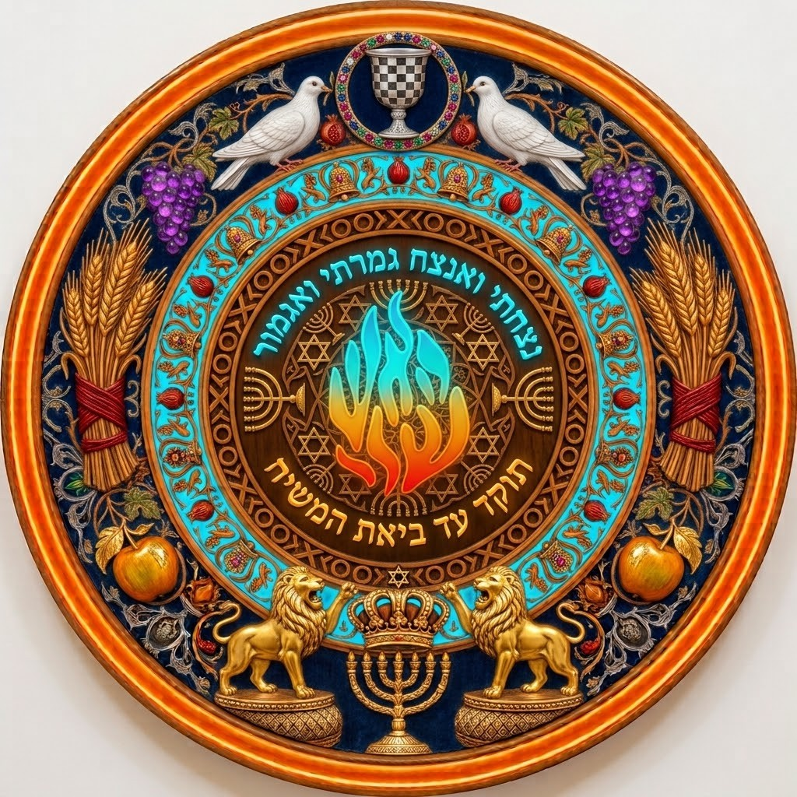
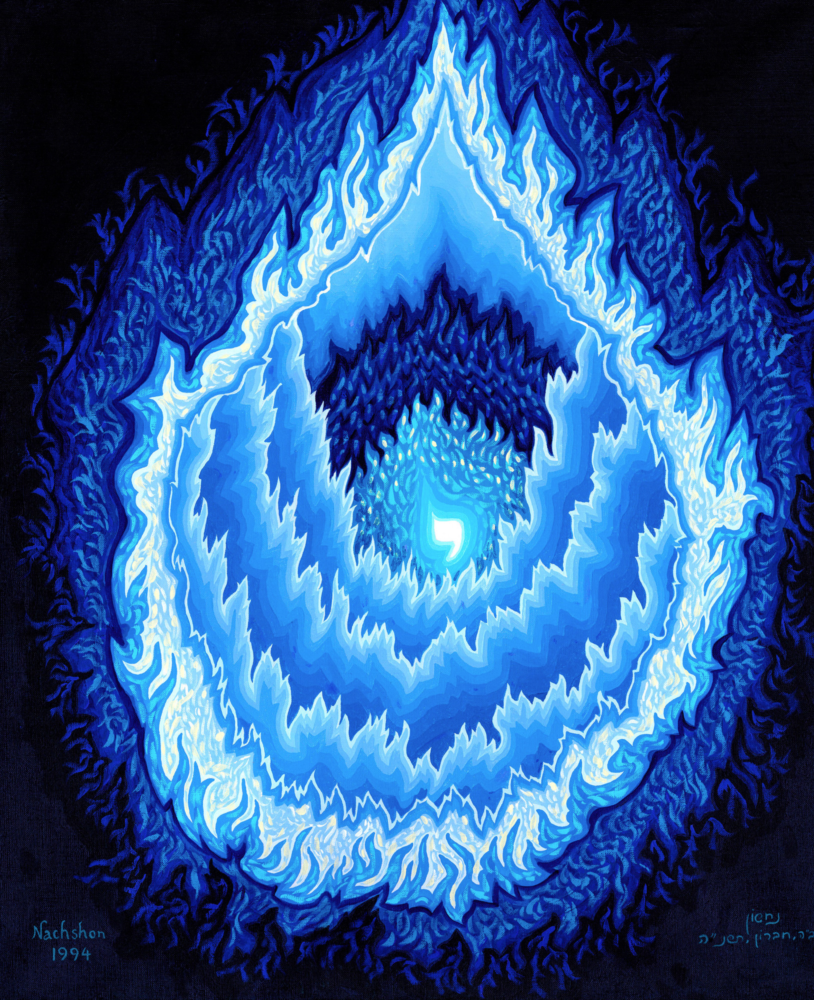

📜 הקדמה
▼כִּי אִיתָא בְּלִקּוּטֵי מוֹהֲרַ"ן חֵלֶק רִאשׁוֹן סִימָן רה וְזֶה לְשׁוֹנוֹ: תִּקּוּן לְמִקְרֵה לַיְלָה רַחֲמָנָא לִצְּלָן, לוֹמַר עֲשָׂרָה קַפִּיטְל תְּהִלִּים בְּאוֹתוֹ הַיּוֹם שֶׁאֵרַע לוֹ חַס וְשָׁלוֹם; כִּי יֵשׁ כֹּחַ בַּאֲמִירַת תְּהִלִּים לְהוֹצִיא הַטִּפָּה מֵהַקְּלִפָּה שֶׁלָּקְחָה אוֹתָהּ, כִּי 'תְּהִלִּים' בְּגִימַטְרִיָּא 'לִילִית' עִם הֶחָמֵשׁ אוֹתִיּוֹת שֶׁל שְׁמָהּ, שֶׁהִיא הַמְּמֻנָּה עַל זֶה כַּיָּדוּעַ. וְצָרִיךְ לְכַוֵּן בִּשְׁעַת אֲמִירַת תְּהִלִּים, שֶׁ'תְּהִלִּים' בְּגִימַטְרִיָּא 'תפ"ה' שֶׁהוּא מְכֻוָּן כְּמִסְפַּר הַשְּׁנֵי שֵׁמוֹת אֵל אֱלֹהִים בְּמִלּוּאוֹ, כָּזֶה: אל"ף למ"ד אל"ף למ"ד ה"י יו"ד מ"ם, שֶׁעַל־יְדֵי הַשְּׁנֵי שֵׁמוֹת אֵלּוּ יוֹצְאָה הַטִּפָּה מֵהַקְּלִפָּה. כִּי הַטִּפָּה הִיא בְּחִינַת חֶסֶד וּגְבוּרָה כַּיָּדוּעַ, כִּי יֵשׁ בָּהּ כֹּחַ אֵשׁ וּמַיִם חֲמִימוּת וְלַחוּת שֶׁהֵם בְּחִינַת חֶסֶד וּגְבוּרָה, וְעַל־יְדֵי הַשְּׁנֵי שֵׁמוֹת אֵל אֱלֹהִים הַנַּ"ל שֶׁהֵם בְּחִינַת חֶסֶד וּגְבוּרָה כַּיָּדוּעַ, שֶׁהֵם גִּימַטְרִיָּא 'תְּהִלִּים' כַּנַּ"ל, עַל־יְדֵי־זֶה מוֹצִיאִין הַטִּפָּה מִשָּׁם; וְזֶה צָרִיךְ לְכַוֵּן בִּשְׁעַת אֲמִירַת תְּהִלִּים.
וְעַל כֵּן צָרִיךְ לוֹמַר עֲשָׂרָה קַפִּיטְל, כִּי יֵשׁ עֲשָׂרָה מִינֵי זִמְרָה, שֶׁהֵם בְּחִינַת הָעֲשָׂרָה לְשׁוֹנוֹת שֶׁנֶּאֱמַר בָּהֶם סֵפֶר תְּהִלִּים כַּמּוּבָא (פסחים קיז. ובזהר אמור דף קא.), שֶׁהֵם: אַשְׁרֵי, וְלַמְנַצֵּחַ, וּמַשְׂכִּיל, וְהַלְלוּיָהּ וְכוּ', עַיֵּן בְּפֵרוּשׁ רַשִּׁ"י. וְיֵשׁ כֹּחַ בְּכָל לָשׁוֹן וְלָשׁוֹן שֶׁל הָעֲשָׂרָה לְשׁוֹנוֹת הַנַּ"ל לְבַטֵּל כֹּחַ הַקְּלִפָּה הַנַּ"ל, כִּי כָּל אֶחָד מֵאֵלּוּ הַלְּשׁוֹנוֹת הֵם הֵפֶךְ הַקְּלִפָּה הַנַּ"ל. כִּי 'אַשְׁרֵי' הוּא לְשׁוֹן רְאִיָּה וְהִסְתַּכְּלוּת, הֵפֶךְ הַקְּלִפָּה הַנַּ"ל שֶׁעִקַּר כֹּחָהּ מִקִּלְקוּל הָאוֹרוֹת (נוסח אחר: הָרְאוּת), מִבְּחִינַת וַתִּכְהֶיןָ עֵינָיו מֵרְאֹת, בְּחִינַת 'יְהִי מְאֹרֹת' - חָסֵר, וְדָרְשׁוּ רַבּוֹתֵינוּ זַ"ל (זהר בראשית דף לג: ועוד) דָּא לִילִית. נִמְצָא שֶׁעִקַּר כֹּחָהּ מִקִּלְקוּל הָרְאִיָּה, וְ'אַשְׁרֵי' שֶׁהוּא לְשׁוֹן רְאִיָּה הִיא הֵפֶךְ מִמֶּנָּה.
וְכֵן מַשְׂכִּיל, כִּי הִיא בִּבְחִינַת 'מְשַׁכֵּל', וּ'מַשְׂכִּיל' הוּא הֵפֶךְ מִזֶּה. וְעִנְיָן זֶה עַיֵּן בְּמָקוֹם אַחֵר (בְּלִקּוּטֵי א סִימָן יט), כִּי עִקַּר כֹּחָהּ לְהַחֲטִיא אֶת הָאָדָם בְּמִקְרֶה חַס וְשָׁלוֹם, הוּא עַל־יְדֵי לְשׁוֹן תַּרְגּוּם, שֶׁהוּא בְּחִינַת מַשְׂכִּיל עַל־יְדֵי תֻּרְגְּמָן, שֶׁהוּא מְעֹרָב טוֹב וָרָע - לִפְעָמִים 'מְשַׁכֵּל' וְלִפְעָמִים 'מַשְׂכִּיל', עַיֵּן שָׁם. וְכֵן 'הַלְלוּיָה' הֵפֶךְ הַקְּלִפָּה שֶׁשְּׁמָהּ לִילִית, עַל שֵׁם שֶׁהִיא מְיַלֶּלֶת בִּילָלָה תָּמִיד, וְהַלֵּל הֵפֶךְ יְלָלָה, כִּי אוֹתִיּוֹת 'הַלְּלִי' הֵם הֶפֶךְ 'יְלָלָה' (וְהַשְּׁאָר לֹא פֵּרֵשׁ):
גַּם הַטִּפָּה בָּאָה מֵהַדַּעַת שֶׁהוּא בְּחִינַת חֶסֶד וּגְבוּרָה כַּיָּדוּעַ, כִּי גַּם הַטִּפָּה הִיא בְּחִינַת חֶסֶד וּגְבוּרָה כַּנַּ"ל. וְיָדוּעַ שֶׁהַדַּעַת הוּא בְּחִינַת חֲמִשָּׁה חֲסָדִים וַחֲמִשָּׁה גְּבוּרוֹת, עַל כֵּן צָרִיךְ לוֹמַר עֲשָׂרָה קַפִּיטְל. וְזֶה בְּחִינַת (תהלים לב, א): 'לְדָוִד מַשְׂכִּיל אַשְׁרֵי נְשׂוּי פֶּשַׁע' - רָאשֵׁי תֵבוֹת 'נַאַף', שֶׁהוּא נִכְנַע עַל־יְדֵי בְּחִינַת 'לְדָוִד מַשְׂכִּיל', דְּהַיְנוּ תְּהִלִּים, עַד כָּאן לְשׁוֹנוֹ:
וְדַע, כִּי אֵלּוּ הֵם הָעֲשָׂרָה קַפִּיטְל תְּהִלִּים שֶׁצְּרִיכִים לְאָמְרָם בְּאוֹתוֹ הַיּוֹם שֶׁאֵרַע לוֹ מִקְרֶה בִּלְתִּי טָהוֹר חַס וְשָׁלוֹם: מִכְתָּם לְדָוִד - טז, לְדָוִד מַשְׂכִּיל - לב, אַשְׁרֵי מַשְׂכִּיל אֶל דָּל - מא, כְּאַיָּל תַּעֲרֹג - מב, לַמְנַצֵּחַ אַל תַּשְׁחֵת - נט, לַמְנַצֵּחַ עַל יְדוּתוּן - עז, תְּפִלָּה לְמֹשֶׁה - צ, הוֹדוּ לַה' קִרְאוּ בִשְׁמוֹ - קה, עַל נַהֲרוֹת בָּבֶל - קלז, הַלְלוּ אֵל בְּקָדְשׁוֹ - קנ. וְאֵלּוּ הָעֲשָׂרָה קַפִּיטְל תְּהִלִּים הֵם תִּקּוּן גָּדוֹל מְאֹד מְאֹד לָעִנְיָן הַנַּ"ל, וּמִי שֶׁזּוֹכֶה לְאָמְרָם בְּאוֹתוֹ הַיּוֹם אֵין צָרִיךְ לִפְחֹד עוֹד כְּלָל מִפְּגַם הַנּוֹרָא שֶׁל הַמִּקְרֶה חַס וְשָׁלוֹם, כִּי בְּוַדַּאי נִתְתַּקֵּן עַל־יְדֵי־זֶה, עַד כָּאן לְשׁוֹנוֹ בְּקִצּוּר:
וְאָמַר שֶׁהוּא תִּקּוּן הַכְּלָלִי; כִּי כָּל עֲבֵרָה יֵשׁ לָהּ תִּקּוּן מְיֻחָד, אֲבָל תִּקּוּן הַנַּ"ל הוּא תִּקּוּן הַכְּלָלִי. גַּם אָמַר אָז שֶׁעִנְיָן הַנַּ"ל שֶׁל הָעֲשָׂרָה קַפִּיטְל תְּהִלִּים יֹאמְרוּ וִיגַלּוּ בִּפְנֵי הַכֹּל.
גַּם יִחֵד אוֹתָם לְעֵדוּת, וְאָמַר שֶׁגַּם כִּי יִמְלְאוּ יָמָיו, אֲזַי אַחַר הִסְתַּלְּקוּתוֹ, מִי שֶׁיָּבוֹא עַל קִבְרוֹ וְיֹאמַר שָׁם אֵלּוּ הָעֲשָׂרָה קַפִּיטְל תְּהִלִּים הַנַּ"ל וְיִתֵּן פְּרוּטָה לִצְדָקָה, אֲפִלּוּ אִם גָּדְלוּ וְעָצְמוּ עֲוֹנוֹתָיו וַחֲטָאָיו מְאֹד מְאֹד חַס וְשָׁלוֹם, אֲזַי אֶתְאַמֵּץ וְאֶשְׁתַּדֵּל לָאֹרֶךְ וְלָרֹחַב לְהוֹשִׁיעוֹ וּלְתַקְּנוֹ.
מקור: ליקוטי מוהר"ן חלק א' סימן רה, שיחות הר"ן סימן קמ"א.

💡 הסבר
▼הַתִּקּוּן הַכְּלָלִי הוּא סֵדֶר שֶׁל עֲשָׂרָה פְּרָקִים מִתְּהִלִּים (טז, לב, מא, מב, נט, עז, צ, קה, קלז, קנ) שֶׁקָּבַע רַבֵּנוּ נַחְמָן מִבְּרֶסְלֶב, כְּדֵי לְתַקֵּן אֶת פְּגַם הַבְּרִית.
כַּמָּה גָּדוֹל כֹּחָהּ שֶׁל אֲמִירַת עֲשָׂרָה קַפִּיטְל אֵלּוּ? רַבֵּנוּ זַ"ל אָמַר שֶׁהֵם מוֹעִילִים מְאֹד מְאֹד, וְהֵם תִּקּוּן גָּמוּר. וְהִזְהִיר שֶׁאַף אִם הָאָדָם לֹא יָכוֹל לִטְבֹּל בְּמִקְוֶה, אוֹ שֶׁהוּא בַּדֶּרֶךְ – אִם יֹאמַר אֶת הָעֲשָׂרָה קַפִּיטְל, אַשְׁרֵי לוֹ.
וְעוֹד אָמַר: שֶׁמִּי שֶׁיָּבוֹא עַל קִבְרוֹ בְּאוּמָן וְיֹאמַר שָׁם אֶת הָעֲשָׂרָה קַפִּיטְל וְיִתֵּן פְּרוּטָה לִצְדָקָה – אֲפִלּוּ אִם גָּדְלוּ וַעֲצְמוּ עֲוֹנוֹתָיו מְאֹד, הוּא יִתְאַמֵּץ וְיִשְׁתַּדֵּל לְהוֹשִׁיעוֹ וּלְתַקְּנוֹ.
הַסְּגֻלָּה בְּקִצּוּר: אֱמֹר אֶת עֲשֶׂרֶת הַמִּזְמוֹרִים בְּכַוָּנָה, וְתִּזְכֶּה לְתִקּוּן גָּמוּר וּלְיְשׁוּעוֹת גְּדוֹלוֹת.

📖 מה זה תיקון הכללי?
▼הַתִּקּוּן הַכְּלָלִי הוּא סֵדֶר שֶׁל עֲשָׂרָה פְּרָקִים מִתְּהִלִּים שֶׁקָּבַע רַבֵּנוּ נַחְמָן מִבְּרֶסְלֶב, כְּדֵי לְתַקֵּן אֶת פְּגַם הַבְּרִית וְלִזְכּוֹת לִתְשׁוּבָה שְׁלֵמָה. הַסְּגֻלָּה נִגְלְתָה לוֹ בְּאֹפֶן נִפְלָא, וְהוּא הֶחְזִיק בָּהּ מְאֹד וְאָמַר שֶׁהִיא "תִּקּוּן כְּלָלִי" לְכָל הַפְּגָמִים.
הָעֲשָׂרָה פְּרָקִים הֵם: ט"ז, ל"ב, מ"א, מ"ב, נ"ט, ע"ז, צ', ק"ה, קל"ז, ק"נ.

👤 מי זה רבי נחמן מברסלב?
▼רַבֵּנוּ נַחְמָן מִבְּרֶסְלֶב (תקל"ב–תק"ע) הָיָה מִגְּדוֹלֵי הָרַבִּים וְהַמְּקֻבָּלִים בְּדוֹרוֹת הָאַחֲרוֹנִים. נוֹלַד בְּמֶזְ'בּוּז' שֶׁבְּאוּקְרָאִינָה, וְנִפְטַר בְּאוּמָן. הוּא הִקִּים אֶת תְּנוּעַת חֲסִידוּת בְּרֶסְלֶב, שֶׁהִדְגִּישָׁה אֶת הַשִּׂמְחָה, הָאֱמוּנָה הַפְּשׁוּטָה, וְהַהִתְבּוֹדְדוּת.
צִיּוּנוֹ בְּאוּמָן הָפַךְ לִמְקוֹם עֲלִיָּה לָרֶגֶל לִרְבָבוֹת יְהוּדִים, בְּעִקָּר בְּרֹאשׁ הַשָּׁנָה. תּוֹרָתוֹ מֻעֲתֶקֶת בְּסִפְרֵי "לִקּוּטֵי מוֹהֲרַ"ן", "שִׂיחוֹת הָרַ"ן", וְעוֹד.
📖 תיקון הכללי - הנוסח המלא
▼נוסח התקשרות: הֲרֵינִי מְקַשֵּׁר עַצְמִי לְכָל הַצַּדִּיקִים הָאֲמִתִּיִּים שֶׁבְּדוֹרֵנוּ, וּלְכָל הַצַּדִּיקִים הָאֲמִתִּיִּים שׁוֹכְנֵי עָפָר, קְדוֹשִׁים אֲשֶׁר בָּאָרֶץ הֵמָּה, וּבִפְרָט לְרַבֵּנוּ הַקָּדוֹשׁ רַבִּי נַחְמָן בֶּן פֵיְגָא זְכוּתָם יָגֵן עָלֵינוּ, וְעַל דַּעְתָּם וְכַוָּנָתָם אֲנִי אוֹמֵר אֶת כָּל הַתְּהִלִּים הַקְּדוֹשִׁים הָאֵלּוּ.
והריני מזמן את פי להודות ולהלל: לְשֵׁם יִחוּד קֻדְשָׁא בְּרִיךְ הוּא וּשְׁכִינְתֵּיהּ, בִּדְחִילוּ וּרְחִימוּ, וּרְחִימוּ וּדְחִילוּ, לְיַחֲדָא שֵׁם ה' בְּרִיךְ הוּא וּשְׁכִינְתֵּיהּ בְּיִחוּדָא שְׁלִים, וְהִנְנִי מוּכָן וּמְזֻמָּן לְקַיֵּם מִצְוַת עֲשֵׂה שֶׁל אֲמִירַת תְּהִלִּים לְתַקֵּן אֶת נַפְשִׁי וְרוּחִי וְנִשְׁמָתִי, וְלַעֲשׂוֹת נַחַת רוּחַ לְיוֹצְרֵנוּ וְלַעֲשׂוֹת רְצוֹן בּוֹרְאֵנוּ.
לכו נרננה: לְכוּ נְרַנְּנָה לַיהוָה, נָרִיעָה לְצוּר יִשְׁעֵנוּ. נְקַדְּמָה פָנָיו בְּתוֹדָה, בִּזְמִרוֹת נָרִיעַ לוֹ. כִּי אֵל גָּדוֹל יְהוָה, וּמֶלֶךְ גָּדוֹל עַל כָּל אֱלֹהִים.
פרק ט"ז
מִכְתָּם לְדָוִד: שָׁמְרֵנִי אֵל, כִּי חָסִיתִי בָךְ. אָמַרְתְּ לַה' אֲדֹנָי אָתָּה, טוֹבָתִי בַּל עָלֶיךָ. לִקְדוֹשִׁים אֲשֶׁר בָּאָרֶץ הֵמָּה, וְאַדִּירֵי כָל חֶפְצִי בָם. יִרְבּוּ עַצְּבוֹתָם אַחֵר מָהָרוּ, בַּל אַסִּיךְ נִסְכֵּיהֶם מִדָּם, וּבַל אֶשָּׂא אֶת שְׁמוֹתָם עַל שְׂפָתָי. ה' מְנָת חֶלְקִי וְכוֹסִי, אַתָּה תּוֹמִיךְ גּוֹרָלִי. חֲבָלִים נָפְלוּ לִי בַּנְּעִמִים, אַף נַחֲלָתִי שָׁפְרָה עָלָי. אֲבָרֵךְ אֶת ה' אֲשֶׁר יְעָצָנִי, אַף לֵילוֹת יִסְּרוּנִי כִלְיוֹתָי. שִׁוִּיתִי ה' לְנֶגְדִּי תָמִיד, כִּי מִימִינִי בַּל אֶמּוֹט. לָכֵן שָׂמַח לִבִּי וַיָּגֶל כְּבוֹדִי, אַף בְּשָׂרִי יִשְׁכֹּן לָבֶטַח. כִּי לֹא תַעֲזֹב נַפְשִׁי לִשְׁאוֹל, לֹא תִתֵּן חֲסִידְךָ לִרְאוֹת שָׁחַת. תּוֹדִיעֵנִי אֹרַח חַיִּים, שֹׂבַע שְׂמָחוֹת אֶת פָּנֶיךָ, נְעִמוֹת בִּימִינְךָ נֶצַח.
פרק ל"ב
לְדָוִד מַשְׂכִּיל: אַשְׁרֵי נְשׂוּי פֶּשַׁע, כְּסוּי חֲטָאָה. אַשְׁרֵי אָדָם לֹא יַחְשֹׁב ה' לוֹ עָוֹן, וְאֵין בְּרוּחוֹ רְמִיָּה. כִּי הֶחֱרַשְׁתִּי, בָּלוּ עֲצָמַי, בְּשַׁאֲגָתִי כָּל הַיּוֹם. כִּי יוֹמָם וָלַיְלָה תִּכְבַּד עָלַי יָדֶךָ, נֶהְפַּךְ לְשַׁדִּי בְּחַרְבֹנֵי קַיִץ סֶלָה. חַטָּאתִי אוֹדִיעֲךָ, וַעֲוֹנִי לֹא כִסִּיתִי. אָמַרְתִּי אוֹדֶה עֲלֵי פְשָׁעַי לַה', וְאַתָּה נָשָׂאתָ עֲוֹן חַטָּאתִי סֶלָה. עַל זֹאת יִתְפַּלֵּל כָּל חָסִיד אֵלֶיךָ לְעֵת מְצֹא, רַק לְשֵׁטֶף מַיִם רַבִּים אֵלָיו לֹא יַגִּיעוּ. אַתָּה סֵתֶר לִי, מִצַּר תִּצְּרֵנִי, רָנֵּי פַלֵּט תְּסוֹבְבֵנִי סֶלָה. אַשְׂכִּילְךָ וְאוֹרְךָ בְּדֶרֶךְ זוֹ תֵלֵךְ, אִיעֲצָה עָלֶיךָ עֵינִי. אַל תִּהְיוּ כְּסוּס כְּפֶרֶד אֵין הָבִין, בְּמֶתֶג וָרֶסֶן עֶדְיוֹ לִבְלוֹם, בַּל קְרֹב אֵלֶיךָ. רַבִּים מַכְאוֹבִים לָרָשָׁע, וְהַבּוֹטֵחַ בַּה' חֶסֶד יְסוֹבְבֶנּוּ. שִׂמְחוּ בַּה' וְגִילוּ צַדִּיקִים, וְהַרְנִינוּ כָּל יִשְׁרֵי לֵב.
פרק מ"א
לַמְנַצֵּחַ מִזְמוֹר לְדָוִד: אַשְׁרֵי מַשְׂכִּיל אֶל דָּל, בְּיוֹם רָעָה יְמַלְּטֵהוּ ה'. ה' יִשְׁמְרֵהוּ וִיחַיֵּהוּ, וְאֻשַּׁר בָּאָרֶץ, וְאַל תִּתְּנֵהוּ בְּנֶפֶשׁ אֹיְבָיו. ה' יִסְעָדֶנּוּ עַל עֶרֶשׂ דְּוָי, כָּל מִשְׁכָּבוֹ הָפַכְתָּ בְחָלְיוֹ. אֲנִי אָמַרְתִּי ה' חָנֵּנִי, רְפָאָה נַפְשִׁי כִּי חָטָאתִי לָךְ. אוֹיְבַי יֹאמְרוּ רַע לִי, מָתַי יָמוּת וְאָבַד שְׁמוֹ. וְאִם בָּא לִרְאוֹת, שָׁוְא יְדַבֵּר, לִבּוֹ יִקְבָּץ אָוֶן לוֹ, יֵצֵא לַחוּץ יְדַבֵּר. יַחַד עָלַי יִתְלַחֲשׁוּ כָּל שֹׂנְאָי, עָלַי יַחְשְׁבוּ רָעָה לִי. דְּבַר בְּלִיַּעַל יָצוּק בּוֹ, וַאֲשֶׁר שָׁכַב לֹא יוֹסִיף לָקוּם. גַּם אִישׁ שְׁלוֹמִי אֲשֶׁר בָּטַחְתִּי בוֹ, אוֹכֵל לַחְמִי, הִגְדִּיל עָלַי עָקֵב. וְאַתָּה ה' חָנֵּנִי וַהֲקִימֵנִי, וַאֲשַׁלְּמָה לָהֶם. בְּזֹאת יָדַעְתִּי כִּי חָפַצְתָּ בִּי, כִּי לֹא יָרִיעַ אֹיְבִי עָלָי. וַאֲנִי בְּתֻמִּי תָּמַכְתָּ בִּי, וַתַּצִּיבֵנִי לְפָנֶיךָ לְעוֹלָם. בָּרוּךְ ה' אֱלֹהֵי יִשְׂרָאֵל, מֵהָעוֹלָם וְעַד הָעוֹלָם, אָמֵן וְאָמֵן.
פרק מ"ב
לַמְנַצֵּחַ מַשְׂכִּיל לִבְנֵי קֹרַח: כְּאַיָּל תַּעֲרֹג עַל אֲפִיקֵי מָיִם, כֵּן נַפְשִׁי תַעֲרֹג אֵלֶיךָ אֱלֹהִים. צָמְאָה נַפְשִׁי לֵאלֹהִים, לְאֵל חָי, מָתַי אָבוֹא וְאֵרָאֶה פְּנֵי אֱלֹהִים. הָיְתָה לִּי דִמְעָתִי לֶחֶם יוֹמָם וָלָיְלָה, בֶּאֱמֹר אֵלַי כָּל הַיּוֹם אַיֵּה אֱלֹהֶיךָ. אֵלֶּה אֶזְכְּרָה וְאֶשְׁפְּכָה עָלַי נַפְשִׁי, כִּי אֶעֱבֹר בַּסָּךְ, אֶדַּדֵּם עַד בֵּית אֱלֹהִים, בְּקוֹל רִנָּה וְתוֹדָה, הָמוֹן חוֹגֵג. מַה תִּשְׁתּוֹחֲחִי נַפְשִׁי, וַתֶּהֱמִי עָלָי, הוֹחִילִי לֵאלֹהִים, כִּי עוֹד אוֹדֶנּוּ, יְשׁוּעוֹת פָּנָיו. אֱלֹהַי עָלַי נַפְשִׁי תִשְׁתּוֹחָח, עַל כֵּן אֶזְכָּרְךָ מֵאֶרֶץ יַרְדֵּן, וְחֶרְמוֹנִים מֵהַר מִצְעָר. תְּהוֹם אֶל תְּהוֹם קוֹרֵא לְקוֹל צִנּוֹרֶיךָ, כָּל מִשְׁבָּרֶיךָ וְגַלֶּיךָ עָלַי עָבָרוּ. יוֹמָם יְצַוֶּה ה' חַסְדּוֹ, וּבַלַּיְלָה שִׁירֹה עִמִּי, תְּפִלָּה לְאֵל חַיָּי. אוֹמְרָה לְאֵל סַלְעִי, לָמָה שְׁכַחְתָּנִי, לָמָּה קֹדֵר אֵלֵךְ בְּלַחַץ אוֹיֵב. בְּרֶצַח בְּעַצְמוֹתַי חֵרְפוּנִי צוֹרְרָי, בְּאָמְרָם אֵלַי כָּל הַיּוֹם אַיֵּה אֱלֹהֶיךָ. מַה תִּשְׁתּוֹחֲחִי נַפְשִׁי, וּמַה תֶּהֱמִי עָלָי, הוֹחִילִי לֵאלֹהִים, כִּי עוֹד אוֹדֶנּוּ, יְשׁוּעֹת פָּנַי וֵאלֹהָי.
פרק נ"ט
לַמְנַצֵּחַ אַל תַּשְׁחֵת, לְדָוִד מִכְתָּם, בִּשְׁלֹחַ שָׁאוּל וַיִּשְׁמְרוּ אֶת הַבַּיִת לַהֲמִיתוֹ. הַצִּילֵנִי מֵאֹיְבַי אֱלֹהָי, מִמִּתְקוֹמְמַי תְּשַׂגְּבֵנִי. הַצִּילֵנִי מִפֹּעֲלֵי אָוֶן, וּמֵאַנְשֵׁי דָמִים הוֹשִׁיעֵנִי. כִּי הִנֵּה אָרְבוּ לְנַפְשִׁי, יָגוּרוּ עָלַי עַזִּים, לֹא פִשְׁעִי וְלֹא חַטָּאתִי ה'. בְּלִי עָוֹן יְרוּצוּן וְיִכּוֹנָנוּ, עוּרָה לִקְרָאתִי וּרְאֵה. וְאַתָּה ה' אֱלֹהִים צְבָאוֹת אֱלֹהֵי יִשְׂרָאֵל, הָקִיצָה לִפְקֹד כָּל הַגּוֹיִם, אַל תָּחֹן כָּל בֹּגְדֵי אָוֶן סֶלָה. יָשׁוּבוּ לָעֶרֶב, יֶהֱמוּ כַכָּלֶב, וִיסוֹבְבוּ עִיר. הִנֵּה יַבִּיעוּן בְּפִיהֶם, חֲרָבוֹת בְּשִׂפְתוֹתֵיהֶם, כִּי מִי שֹׁמֵעַ. וְאַתָּה ה' תִּשְׂחַק לָמוֹ, תִּלְעַג לְכָל גּוֹיִם. עֻזּוֹ אֵלֶיךָ אֶשְׁמֹרָה, כִּי אֱלֹהִים מִשְׂגַּבִּי. אֱלֹהֵי חַסְדּוֹ יְקַדְּמֵנִי, אֱלֹהִים יַרְאֵנִי בְשֹׁנְאָי. אַל תַּהַרְגֵם פֶּן יִשְׁכְּחוּ עַמִּי, הֲנִיעֵמוֹ בְחֵילְךָ וְהוֹרִידֵמוֹ, מָגִנֵּנוּ אֲדֹנָי. חַטַּאת פִּימוֹ דְּבַר שְׂפָתֵימוֹ, וְיִלָּכְדוּ בִגְאוֹנָם, וּמֵאָלָה וּמִכַּחַשׁ יְסַפֵּרוּ. כַּלֵּה בְחֵמָה, כַּלֵּה וְאֵינֵמוֹ, וְיֵדְעוּ כִּי אֱלֹהִים מֹשֵׁל בְּיַעֲקֹב לְאַפְסֵי הָאָרֶץ סֶלָה. וְיָשׁוּבוּ לָעֶרֶב, יֶהֱמוּ כַכָּלֶב, וִיסוֹבְבוּ עִיר. הֵמָּה יְנוּעוּן לֶאֱכֹל, אִם לֹא יִשְׂבְּעוּ וַיָּלִינוּ. וַאֲנִי אָשִׁיר עֻזֶּךָ, וַאֲרַנֵּן לַבֹּקֶר חַסְדֶּךָ, כִּי הָיִיתָ מִשְׂגָּב לִי, וּמָנוֹס בְּיוֹם צַר לִי. עֻזִּי אֵלֶיךָ אֲזַמֵּרָה, כִּי אֱלֹהִים מִשְׂגַּבִּי, אֱלֹהֵי חַסְדִּי.
פרק ע"ז
לַמְנַצֵּחַ עַל יְדוּתוּן, לְאָסָף מִזְמוֹר: קוֹלִי אֶל אֱלֹהִים וְאֶצְעָקָה, קוֹלִי אֶל אֱלֹהִים וְהֶאֱזִין אֵלָי. בְּיוֹם צָרָתִי אֲדֹנָי דָּרָשְׁתִּי, יָדִי לַיְלָה נִגְּרָה וְלֹא תָפוּג, מֵאֲנָה לְהִנָּחֵם נַפְשִׁי. אֶזְכְּרָה אֱלֹהִים וְאֶהֱמָיָה, אָשִׂיחָה וְתִתְעַטֵּף רוּחִי סֶלָה. אָחַזְתָּ שְׁמֻרוֹת עֵינָי, נִפְעַמְתִּי וְלֹא אֲדַבֵּר. חִשַּׁבְתִּי יָמִים מִקֶּדֶם, שְׁנוֹת עוֹלָמִים. אֶזְכְּרָה נְגִינָתִי בַלָּיְלָה, עִם לְבָבִי אָשִׂיחָה, וַיְחַפֵּשׂ רוּחִי. הַלְעוֹלָמִים יִזְנַח אֲדֹנָי, וְלֹא יוֹסִיף לִרְצוֹת עוֹד. הֶאָפֵס לָנֶצַח חַסְדּוֹ, גָּמַר אֹמֶר לְדֹר וָדֹר. הֲשָׁכַח חַנּוֹת אֵל, אִם קָפַץ בְּאַף רַחֲמָיו סֶלָה. וָאֹמַר חַלּוֹתִי הִיא, שְׁנוֹת יְמִין עֶלְיוֹן. אֶזְכּוֹר מַעַלְלֵי יָהּ, כִּי אֶזְכְּרָה מִקֶּדֶם פִּלְאֶךָ. וְהָגִיתִי בְכָל פָּעֳלֶךָ, וּבַעֲלִילוֹתֶיךָ אָשִׂיחָה. אֱלֹהִים בַּקֹּדֶשׁ דַּרְכֶּךָ, מִי אֵל גָּדוֹל כֵּאלֹהִים. אַתָּה הָאֵל עֹשֵׂה פֶלֶא, הוֹדַעְתָּ בָעַמִּים עֻזֶּךָ. גָּאַלְתָּ בִּזְרוֹעַ עַמֶּךָ, בְּנֵי יַעֲקֹב וְיוֹסֵף סֶלָה. רָאוּךָ מַּיִם אֱלֹהִים, רָאוּךָ מַּיִם יָחִילוּ, אַף יִרְגְּזוּ תְהֹמוֹת. זֹרְמוּ מַיִם עָבוֹת, קוֹל נָתְנוּ שְׁחָקִים, אַף חֲצָצֶיךָ יִתְהַלָּכוּ. קוֹל רַעַמְךָ בַּגַּלְגַּל, הֵאִירוּ בְרָקִים תֵּבֵל, רָגְזָה וַתִּרְעַשׁ הָאָרֶץ. בַּיָּם דַּרְכֶּךָ, וּשְׁבִילְךָ בְּמַיִם רַבִּים, וְעִקְּבוֹתֶיךָ לֹא נֹדָעוּ. נָחִיתָ כַצֹּאן עַמֶּךָ, בְּיַד מֹשֶׁה וְאַהֲרֹן.
פרק צ'
תְּפִלָּה לְמֹשֶׁה אִישׁ הָאֱלֹהִים: אֲדֹנָי, מָעוֹן אַתָּה הָיִיתָ לָּנוּ בְּדֹר וָדֹר. בְּטֶרֶם הָרִים יֻלָּדוּ, וְתַחְבֶּלֶת אֶרֶץ וְתֵבֵל, וּמֵעוֹלָם עַד עוֹלָם אַתָּה אֵל. תָּשֵׁב אֱנוֹשׁ עַד דַּכָּא, וַתֹּאמֶר שׁוּבוּ בְנֵי אָדָם. כִּי אֶלֶף שָׁנִים בְּעֵינֶיךָ, כְּיוֹם אֶתְמוֹל כִּי יַעֲבֹר, וְאַשְׁמוּרָה בַלָּיְלָה. זְרַמְתָּם שֵׁנָה יִהְיוּ, בַּבֹּקֶר כֶּחָצִיר יַחֲלֹף. בַּבֹּקֶר יָצִיץ וְחָלָף, לָעֶרֶב יְמוֹלֵל וְיָבֵשׁ. כִּי כָלִינוּ בְאַפֶּךָ, וּבַחֲמָתְךָ נִבְהָלְנוּ. שַׁתָּה עֲוֹנֹתֵינוּ לְנֶגְדֶּךָ, עֲלֻמֵנוּ לִמְאוֹר פָּנֶיךָ. כִּי כָל יָמֵינוּ פָּנוּ בְעֶבְרָתֶךָ, כִּלִּינוּ שָׁנֵינוּ כְמוֹ הֶגֶה. יְמֵי שְׁנוֹתֵינוּ בָהֶם שִׁבְעִים שָׁנָה, וְאִם בִּגְבוּרֹת שְׁמוֹנִים שָׁנָה, וְרָהְבָּם עָמָל וָאָוֶן, כִּי גָז חִישׁ וַנָּעֻפָה. מִי יוֹדֵעַ עֹז אַפֶּךָ, וּכְיִרְאָתְךָ עֶבְרָתֶךָ. לִמְנוֹת יָמֵינוּ כֵּן הוֹדַע, וְנָבִא לְבַב חָכְמָה. שׁוּבָה ה' עַד מָתָי, וְהִנָּחֵם עַל עֲבָדֶיךָ. שַׂבְּעֵנוּ בַבֹּקֶר חַסְדֶּךָ, וּנְרַנְּנָה וְנִשְׂמְחָה בְכָל יָמֵינוּ. שַׂמְּחֵנוּ כִּימוֹת עִנִּיתָנוּ, שְׁנוֹת רָאִינוּ רָעָה. יֵרָאֶה אֶל עֲבָדֶיךָ פָעֳלֶךָ, וַהֲדָרְךָ עַל בְּנֵיהֶם. וִיהִי נֹעַם אֲדֹנָי אֱלֹהֵינוּ עָלֵינוּ, וּמַעֲשֵׂה יָדֵינוּ כּוֹנְנָה עָלֵינוּ, וּמַעֲשֵׂה יָדֵינוּ כּוֹנְנֵהוּ.
פרק ק"ה
הוֹדוּ לַה' קִרְאוּ בִשְׁמוֹ, הוֹדִיעוּ בָעַמִּים עֲלִילוֹתָיו. שִׁירוּ לוֹ זַמְּרוּ לוֹ, שִׂיחוּ בְּכָל נִפְלְאֹתָיו. הִתְהַלְלוּ בְּשֵׁם קָדְשׁוֹ, יִשְׂמַח לֵב מְבַקְשֵׁי ה'. דִּרְשׁוּ ה' וְעֻזּוֹ, בַּקְּשׁוּ פָנָיו תָּמִיד. זִכְרוּ נִפְלְאֹתָיו אֲשֶׁר עָשָׂה, מֹפְתָיו וּמִשְׁפְּטֵי פִיו. זֶרַע אַבְרָהָם עַבְדּוֹ, בְּנֵי יַעֲקֹב בְּחִירָיו. הוּא ה' אֱלֹהֵינוּ, בְּכָל הָאָרֶץ מִשְׁפָּטָיו. זָכַר לְעוֹלָם בְּרִיתוֹ, דָּבָר צִוָּה לְאֶלֶף דּוֹר. אֲשֶׁר כָּרַת אֶת אַבְרָהָם, וּשְׁבוּעָתוֹ לְיִצְחָק. וַיַּעֲמִידֶהָ לְיַעֲקֹב לְחֹק, לְיִשְׂרָאֵל בְּרִית עוֹלָם. לֵאמֹר לְךָ אֶתֵּן אֶרֶץ כְּנָעַן, חֶבֶל נַחֲלַתְכֶם. בִּהְיוֹתָם מְתֵי מִסְפָּר, כִּמְעַט וְגָרִים בָּהּ. וַיִּתְהַלְּכוּ מִגּוֹי אֶל גּוֹי, מִמַּמְלָכָה אֶל עַם אַחֵר. לֹא הִנִּיחַ אָדָם לְעָשְׁקָם, וַיּוֹכַח עֲלֵיהֶם מְלָכִים. אַל תִּגְּעוּ בִמְשִׁיחָי, וְלִנְבִיאַי אַל תָּרֵעוּ. וַיִּקְרָא רָעָב עַל הָאָרֶץ, כָּל מַטֵּה לֶחֶם שָׁבָר. שָׁלַח לִפְנֵיהֶם אִישׁ, לְעֶבֶד נִמְכַּר יוֹסֵף. עִנּוּ בַכֶּבֶל רַגְלוֹ, בַּרְזֶל בָּאָה נַפְשׁוֹ. עַד עֵת בֹּא דְבָרוֹ, אִמְרַת ה' צְרָפָתְהוּ. שָׁלַח מֶלֶךְ וַיַּתִּירֵהוּ, מֹשֵׁל עַמִּים וַיְפַתְּחֵהוּ. שָׂמוֹ אָדוֹן לְבֵיתוֹ, וּמֹשֵׁל בְּכָל קִנְיָנוֹ. לֶאְסֹר שָׂרָיו בְּנַפְשׁוֹ, וּזְקֵנָיו יְחַכֵּם. וַיָּבֹא יִשְׂרָאֵל מִצְרָיִם, וְיַעֲקֹב גָּר בְּאֶרֶץ חָם. וַיֶּפֶר אֶת עַמּוֹ מְאֹד, וַיַּעֲצִמֵהוּ מִצָּרָיו. הָפַךְ לִבָּם לִשְׂנֹא עַמּוֹ, לְהִתְנַכֵּל בַּעֲבָדָיו. שָׁלַח מֹשֶׁה עַבְדּוֹ, אַהֲרֹן אֲשֶׁר בָּחַר בּוֹ. שָׂמוּ בָם דִּבְרֵי אֹתֹתָיו, וּמֹפְתִים בְּאֶרֶץ חָם. שָׁלַח חֹשֶׁךְ וַיַּחְשִׁךְ, וְלֹא מָרוּ אֶת דְּבָרָיו. הָפַךְ אֶת מֵימֵיהֶם לְדָם, וַיָּמֶת אֶת דְּגָתָם. שָׁרַץ אַרְצָם צְפַרְדְּעִים, בְּחַדְרֵי מַלְכֵיהֶם. אָמַר וַיָּבֹא עָרֹב, וְכִנִּים בְּכָל גְּבוּלָם. נָתַן גִּשְׁמֵיהֶם בָּרָד, אֵשׁ לֶהָבוֹת בְּאַרְצָם. וַיַּךְ גַּפְנָם וּתְאֵנָתָם, וַיְשַׁבֵּר עֵץ גְּבוּלָם. אָמַר וַיָּבֹא אַרְבֶּה, וְיֶלֶק וְאֵין מִסְפָּר. וַיֹּאכַל כָּל עֵשֶׂב בְּאַרְצָם, וַיֹּאכַל פְּרִי אַדְמָתָם. וַיַּךְ כָּל בְּכוֹר בְּאַרְצָם, רֵאשִׁית לְכָל אוֹנָם. וַיּוֹצִיאֵם בְּכֶסֶף וְזָהָב, וְאֵין בִּשְׁבָטָיו כּוֹשֵׁל. שָׂמַח מִצְרַיִם בְּצֵאתָם, כִּי נָפַל פַּחְדָּם עֲלֵיהֶם. פָּרַשׂ עָנָן לְמָסָךְ, וְאֵשׁ לְהָאִיר לָיְלָה. שָׁאַל וַיָּבֵא שְׂלָו, וְלֶחֶם שָׁמַיִם יַשְׂבִּיעֵם. פָּתַח צוּר וַיָּזוּבוּ מָיִם, הָלְכוּ בַּצִּיּוֹת נָהָר. כִּי זָכַר אֶת דְּבַר קָדְשׁוֹ, אֶת אַבְרָהָם עַבְדּוֹ. וַיּוֹצִיא עַמּוֹ בְשָׂשׂוֹן, בְּרִנָּה אֶת בְּחִירָיו. וַיִּתֵּן לָהֶם אַרְצוֹת גּוֹיִם, וַעֲמַל לְאֻמִּים יִירָשׁוּ. בַּעֲבוּר יִשְׁמְרוּ חֻקָּיו, וְתוֹרֹתָיו יִנְצֹרוּ, הַלְלוּיָהּ.
פרק קל"ז
עַל נַהֲרוֹת בָּבֶל, שָׁם יָשַׁבְנוּ גַּם בָּכִינוּ, בְּזָכְרֵנוּ אֶת צִיּוֹן. עַל עֲרָבִים בְּתוֹכָהּ, תָּלִינוּ כִּנֹּרוֹתֵינוּ. כִּי שָׁם שְׁאֵלוּנוּ שׁוֹבֵינוּ דִּבְרֵי שִׁיר, וְתוֹלָלֵינוּ שִׂמְחָה, שִׁירוּ לָנוּ מִשִּׁיר צִיּוֹן. אֵיךְ נָשִׁיר אֶת שִׁיר ה' עַל אַדְמַת נֵכָר. אִם אֶשְׁכָּחֵךְ יְרוּשָׁלָ͏ִם, תִּשְׁכַּח יְמִינִי. תִּדְבַּק לְשׁוֹנִי לְחִכִּי, אִם לֹא אֶזְכְּרֵכִי, אִם לֹא אַעֲלֶה אֶת יְרוּשָׁלַ͏ִם עַל רֹאשׁ שִׂמְחָתִי. זְכֹר ה' לִבְנֵי אֱדוֹם, אֵת יוֹם יְרוּשָׁלָ͏ִם, הָאֹמְרִים עָרוּ עָרוּ, עַד הַיְסוֹד בָּהּ. בַּת בָּבֶל הַשְּׁדוּדָה, אַשְׁרֵי שֶׁיְשַׁלֶּם לָךְ אֶת גְּמוּלֵךְ שֶׁגָּמַלְתְּ לָנוּ. אַשְׁרֵי שֶׁיֹּאחֵז וְנִפֵּץ אֶת עֹלָלַיִךְ אֶל הַסָּלַע.
פרק ק"נ
הַלְלוּיָהּ, הַלְלוּ אֵל בְּקָדְשׁוֹ, הַלְלוּהוּ בִּרְקִיעַ עֻזּוֹ. הַלְלוּהוּ בִגְבוּרֹתָיו, הַלְלוּהוּ כְּרֹב גֻּדְלוֹ. הַלְלוּהוּ בְּתֵקַע שׁוֹפָר, הַלְלוּהוּ בְּנֵבֶל וְכִנּוֹר. הַלְלוּהוּ בְתֹף וּמָחוֹל, הַלְלוּהוּ בְּמִנִּים וְעוּגָב. הַלְלוּהוּ בְצִלְצְלֵי שָׁמַע, הַלְלוּהוּ בְּצִלְצְלֵי תְרוּעָה. כֹּל הַנְּשָׁמָה תְּהַלֵּל יָהּ, הַלְלוּיָהּ.
מי יתן מציון
מִי יִתֵּן מִצִּיּוֹן יְשׁוּעַת יִשְׂרָאֵל, בְּשׁוּב ה' שְׁבוּת עַמּוֹ, יָגֵל יַעֲקֹב, יִשְׂמַח יִשְׂרָאֵל. וּתְשׁוּעַת צַדִּיקִים מֵה', מָעוּזָּם בְּעֵת צָרָה. וַיַּעְזְרֵם ה' וַיְפַלְּטֵם, יְפַלְּטֵם מֵרְשָׁעִים וְיוֹשִׁיעֵם, כִּי חָסוּ בוֹ.
פְּדִיּוֹן נֶפֶשׁ הוּא מִנְהָג קָדוּם בְּיַהֲדוּת, לְפַדּוֹת אֶת הַנֶּפֶשׁ מִצָּרוֹת וּמִדִּינִים קָשִׁים. בְּחַסִּידוּת בְּרֶסְלֶב, נָהֹג לַעֲשׂוֹת פְּדִיּוֹן נֶפֶשׁ בְּעֵת צָרָה, לִפְנֵי נְסִיעוֹת, אוֹ לְעִלּוּי נְשָׁמוֹת.
התרומה מועברת לפרטי החשבון הבאים:
בנק הדואר | סניף: 001 | חשבון: 31127380 | ע"ש: ידידיה פישון
🙏 לחיצה כאן תפתח את פרטי התרומה לפעולה מהירה
✨ תפילה נאה
▼זֹאת הַתְּפִלָּה מָצָאנוּ בְּאַמְתַּחַת הַכְּתָבִים וְהִיא מְעַט הַכַּמּוּת וְרַב הָאֵיכוּת:
רִבּוֹנוֹ שֶׁל עוֹלָם, עִלַּת הָעִלּוֹת וְסִבַּת כָּל הַסִּבּוֹת, אַנְתְּ לְעֵלָּא לְעֵלָּא מִן כֹּלָא, וְלֵית לְעֵלָּא מִנָּךְ, דְּלֵית מַחְשָׁבָה תְּפִיסָא בָךְ כְּלָל, וּלְךָ דֻמִיָּה תְהִלָּה, וּמְרוֹמַם עַל כָּל בְּרָכָה וּתְהִלָּה.
אוֹתְךָ אֶדְרֹשׁ אוֹתְךָ אֲבַקֵּשׁ, שֶׁתַּחְתֹּר חֲתִירָה דֶּרֶךְ כְּבוּשָׁה מֵאִתְּךָ, דֶּרֶךְ כָּל הָעוֹלָמוֹת, עַד הַהִשְׁתַּלְשְׁלוּת שֶׁלִּי בַּמָּקוֹם שֶׁאֲנִי עוֹמֵד, כְּפִי אֲשֶׁר נִגְלָה לְךָ יֹדֵעַ תַּעֲלֻמוֹת, וּבַדֶּרֶךְ וּנְתִיב הַזֶּה תָּאִיר עָלַי אוֹרְךָ, לְהַחֲזִירֵנִי בִּתְשׁוּבָה שְׁלֵמָה לְפָנֶיךָ בֶּאֱמֶת, כְּפִי רְצוֹנְךָ בֶּאֱמֶת, כְּפִי רְצוֹן מִבְחַר הַבְּרוּאִים, לִבְלִי לַחֲשֹׁב בְּמַחֲשַׁבְתִּי שׁוּם מַחֲשֶׁבֶת חוּץ, וְשׁוּם מַחֲשָׁבָה וּבִלְבּוּל שֶׁהוּא נֶגֶד רְצוֹנֶךָ, רַק לִדַּבֵּק בְּמַחֲשָׁבוֹת זַכּוֹת צַחוֹת וּקְדוֹשׁוֹת בַּעֲבוֹדָתְךָ בֶּאֱמֶת בְּהַשָּׂגָתְךָ וּבְתוֹרָתְךָ.
הַט לִבִּי אֶל עֵדְוֹתֶיךָ, וְתֵן לִי לֵב טָהוֹר לְעָבְדְּךָ בֶּאֱמֶת. וּמִמְּצֻלוֹת יָם תּוֹצִיאֵנִי לְאוֹר גָּדוֹל [חִישׁ] קַל מְהֵרָה, תְּשׁוּעַת יְהֹוָה כְּהֶרֶף עַיִן, לֵאוֹר בְּאוֹר הַחַיִּים כָּל יְמֵי הֱיוֹתִי עַל פְּנֵי הָאֲדָמָה.
וְאֶזְכֶּה לְחַדֵּשׁ נְעוּרַי הַיָּמִים שֶׁעָבְרוּ בַּחֹשֶׁךְ, לְהַחֲזִירָם אֶל הַקְּדֻשָּׁה, וְתִהְיֶה יְצִיאָתִי מִן הָעוֹלָם כְּבִיאָתִי בְּלֹא חֵטְא. וְאֶזְכֶּה לַחֲזוֹת בְּנֹעַם יְהֹוָה וּלְבַקֵּר בְּהֵיכָלוֹ, כֻּלּוֹ אֹמֵר כָּבוֹד, אָמֵן נֶצַח סֶלָה וָעֶד.

🙏 תפילות
▼אַחַר הָעֲשָׂרָה קַפִּיטְל תְּהִלִּים טוֹב לוֹמַר תְּפִלָּה זוֹ:
"אָשִׁירָה לַיְהֹוָה בְּחַיָּי, אֲזַמְּרָה לֵאלֹהַי בְּעוֹדִי"
"יֶעֱרַב עָלָיו שִׂיחִי, אָנֹכִי אֶשְׂמַח בַּה'"
"הוֹדוּ לַיְהֹוָה בְּכִנּוֹר, בְּנֵבֶל עָשׂוֹר זַמְּרוּ לוֹ"
"אֱלֹהִים שִׁיר חָדָשׁ אָשִׁירָה לָּךְ, בְּנֵבֶל עָשׂוֹר אֲזַמְּרָה לָּךְ"
"עֲלֵי עָשׂוֹר וַעֲלֵי נָבֶל, עֲלֵי הִגָּיוֹן בְּכִנּוֹר"
"כִּי שִׂמַּחְתַּנִי יְהֹוָה בְּפָעֳלֶךָ, בְּמַעֲשֵׂי יָדֶיךָ אֲרַנֵּן"
רִבּוֹנוֹ שֶׁל עוֹלָם, אֲדוֹן כֹּל, בּוֹרֵא כָל הַנְּשָׁמוֹת, רִבּוֹן כָּל הַמַּעֲשִׂים, הַבּוֹחֵר בְּשִׁירֵי זִמְרָה. עָזְרֵנִי וְחָנֵּנִי בְּרַחֲמֶיךָ הָרַבִּים וּבַחֲסָדֶיךָ הָעֲצוּמִים, שֶׁאֶזְכֶּה לְעוֹרֵר וּלְהוֹצִיא וּלְגַלּוֹת כָּל הָעֲשָׂרָה מִינֵי נְגִינָה שֶׁנֶּאֱמַר בָּהֶם סֵפֶר תְּהִלִּים.
רִבּוֹנוֹ שֶׁל עוֹלָם, אֵל חַי וְקַיָּם, חַי הַחַיִּים, מָלֵא רַחֲמִים, הַדָּן אֶת כָּל הָעוֹלָם לְכַף זְכוּת תָּמִיד, הֶחָפֵץ חֶסֶד וּמַרְבֶּה לְהֵיטִיב. אָבִי אָבִי, גּוֹאֲלִי וּפוֹדִי, יָדַעְתִּי ה' יָדַעְתִּי כִּי אֲנִי בְּעַצְמִי הַחַיָּב וְהַפּוֹשֵׁעַ. עַל כֵּן בָּאתִי לְפָנֶיךָ ה' אֱלֹהַי וֵאלֹהֵי אֲבוֹתַי, אֱלֹהֵי אַבְרָהָם אֱלֹהֵי יִצְחָק וֵאלֹהֵי יַעֲקֹב, וֵאלֹהֵי כָּל הַצַּדִּיקִים וְהַחֲסִידִים הָאֲמִתִּיִּים, שֶׁתְּרַחֵם עָלַי וְתִגְעֹר בְּהַיֵּצֶר הָרָע וּתְגָרְשׁוֹ מִמֶּנִּי מֵעַתָּה וְעַד עוֹלָם.
אָבִינוּ מֶלֶךְ אֵל חַי וְקַיָּם, גּוֹאֵל חָזָק, שִׁטַּחְתִּי אֵלֶיךָ כַפָּי, הַצֵּל הַצֵּל, הוֹשִׁיעָה הוֹשִׁיעָה. תֶּן לִי תִּקְוָה וְלֹא אֹבַד חַס וְשָׁלוֹם.
רִבּוֹנוֹ שֶׁל עוֹלָם, פְּתַח פִּיךָ לְאִלֵּם כָּמוֹנִי, וְתִשְׁלַח לִי דִּבּוּרִים מִמְּעוֹן קָדְשְׁךָ, בְּאֹפֶן שֶׁאוּכַל לְרַצּוֹת וּלְפַיֵּס אוֹתְךָ, שֶׁתְּקַבֵּל בְּרַחֲמֶיךָ אֶת אֵלּוּ הָעֲשָׂרָה קַפִּיטְל תְּהִלִּים שֶׁאָמַרְתִּי לְפָנֶיךָ, כְּאִלּוּ אֲמָרָם דָּוִד הַמֶּלֶךְ עָלָיו הַשָּׁלוֹם בְּעַצְמוֹ.
רַחֵם עָלַי אָבִי אָב הָרַחֲמָן, רַחֵם עָלַי שׁוֹמֵעַ תְּפִלָּה, חוּס וַחֲמֹל עָלַי שׁוֹמֵעַ צְעָקָה. "כְּחַסְדְּךָ חַיֵּנִי וְאֶשְׁמְרָה עֵדוּת פִּיךָ", "לֵב טָהוֹר בְּרָא לִי אֱלֹהִים וְרוּחַ נָכוֹן חַדֵּשׁ בְּקִרְבִּי".
מקור: ליקוטי תפילות, רבי נתן מברסלב.
📜 Introduction
▼From Likutei Moharan, Part 1, Section 205: The Tikkun HaKlali (General Remedy) is a set of ten Psalms established by Rabbi Nachman of Breslov to repair the blemish of the covenant. Rabbi Nachman taught that anyone who recites these ten Psalms with sincerity and joy will merit great salvation, complete healing, and forgiveness.
The Ten Psalms: 16, 32, 41, 42, 59, 77, 90, 105, 137, 150.
Source: Likutei Moharan Part 1, Section 205, Sichot HaRan Section 141.
💡 Explanation
▼The Tikkun HaKlali is a specific order of ten Psalms established by Rabbi Nachman of Breslov to repair the blemish of the covenant.
How great is the power of reciting these ten Psalms? Rabbi Nachman said they are extremely effective and constitute a complete remedy.
In short: Recite the ten Psalms with intention, and you will merit a complete remedy and great salvation.
📖 What is Tikkun HaKlali?
▼The Tikkun HaKlali is a set of ten Psalms established by Rabbi Nachman of Breslov to repair the blemish of the covenant and to merit complete repentance. The remedy was revealed to him in a wondrous manner, and he held it very dear, calling it a "general remedy" for all blemishes.
The ten chapters are: 16, 32, 41, 42, 59, 77, 90, 105, 137, 150.
👤 Who is Rabbi Nachman of Breslov?
▼Rabbi Nachman of Breslov (1772–1810) was one of the great righteous ones and Kabbalists of modern times. He was born in Medzhybizh, Ukraine, and passed away in Uman. He founded the Breslov Hasidic movement, which emphasized joy, simple faith, and Hitbodedut (personal prayer).
His grave in Uman has become a major pilgrimage site for tens of thousands of Jews, especially on Rosh Hashanah. His teachings are recorded in "Likutei Moharan", "Sichot HaRan", and other works.
📖 The Ten Psalms - Full Text
▼Lechu Neranena
O come, let us sing unto the LORD: let us make a joyful noise to the rock of our salvation. Let us come before his presence with thanksgiving, and make a joyful noise unto him with psalms. For the LORD is a great God, and a great King above all gods.
Psalm 16
Michtam of David. Preserve me, O God: for in thee do I put my trust. O my soul, thou hast said unto the LORD, Thou art my Lord: my goodness extendeth not to thee; But to the saints that are in the earth, and to the excellent, in whom is all my delight. Their sorrows shall be multiplied that hasten after another god: their drink offerings of blood will I not offer, nor take up their names into my lips. The LORD is the portion of mine inheritance and of my cup: thou maintainest my lot. The lines are fallen unto me in pleasant places; yea, I have a goodly heritage. I will bless the LORD, who hath given me counsel: my reins also instruct me in the night seasons. I have set the LORD always before me: because he is at my right hand, I shall not be moved. Therefore my heart is glad, and my glory rejoiceth: my flesh also shall rest in hope. For thou wilt not leave my soul in hell; neither wilt thou suffer thine Holy One to see corruption. Thou wilt shew me the path of life: in thy presence is fulness of joy; at thy right hand there are pleasures for evermore.
Psalm 32
A Psalm of David, Maschil. Blessed is he whose transgression is forgiven, whose sin is covered. Blessed is the man unto whom the LORD imputeth not iniquity, and in whose spirit there is no guile. When I kept silence, my bones waxed old through my roaring all the day long. For day and night thy hand was heavy upon me: my moisture is turned into the drought of summer. Selah. I acknowledged my sin unto thee, and mine iniquity have I not hid. I said, I will confess my transgressions unto the LORD; and thou forgavest the iniquity of my sin. Selah. For this shall every one that is godly pray unto thee in a time when thou mayest be found: surely in the floods of great waters they shall not come nigh unto him. Thou art my hiding place; thou shalt preserve me from trouble; thou shalt compass me about with songs of deliverance. Selah. I will instruct thee and teach thee in the way which thou shalt go: I will guide thee with mine eye. Be ye not as the horse, or as the mule, which have no understanding: whose mouth must be held in with bit and bridle, lest they come near unto thee. Many sorrows shall be to the wicked: but he that trusteth in the LORD, mercy shall compass him about. Be glad in the LORD, and rejoice, ye righteous: and shout for joy, all ye that are upright in heart.
Psalm 41
To the chief Musician, A Psalm of David. Blessed is he that considereth the poor: the LORD will deliver him in time of trouble. The LORD will preserve him, and keep him alive; and he shall be blessed upon the earth: and thou wilt not deliver him unto the will of his enemies. The LORD will strengthen him upon the bed of languishing: thou wilt make all his bed in his sickness. I said, LORD, be merciful unto me: heal my soul; for I have sinned against thee. Mine enemies speak evil of me, When shall he die, and his name perish? And if he come to see me, he speaketh vanity: his heart gathereth iniquity to itself; when he goeth abroad, he telleth it. All that hate me whisper together against me: against me do they devise my hurt. An evil disease, say they, cleaveth fast unto him: and now that he lieth he shall rise up no more. Yea, mine own familiar friend, in whom I trusted, which did eat of my bread, hath lifted up his heel against me. But thou, O LORD, be merciful unto me, and raise me up, that I may requite them. By this I know that thou favourest me, because mine enemy doth not triumph over me. And as for me, thou upholdest me in mine integrity, and settest me before thy face for ever. Blessed be the LORD God of Israel from everlasting, and to everlasting. Amen, and Amen.
Psalm 42
To the chief Musician, Maschil, for the sons of Korah. As the hart panteth after the water brooks, so panteth my soul after thee, O God. My soul thirsteth for God, for the living God: when shall I come and appear before God? My tears have been my meat day and night, while they continually say unto me, Where is thy God? When I remember these things, I pour out my soul in me: for I had gone with the multitude, I went with them to the house of God, with the voice of joy and praise, with a multitude that kept holyday. Why art thou cast down, O my soul? and why art thou disquieted in me? hope thou in God: for I shall yet praise him for the help of his countenance. O my God, my soul is cast down within me: therefore will I remember thee from the land of Jordan, and of the Hermonites, from the hill Mizar. Deep calleth unto deep at the noise of thy waterspouts: all thy waves and thy billows are gone over me. Yet the LORD will command his lovingkindness in the daytime, and in the night his song shall be with me, and my prayer unto the God of my life. I will say unto God my rock, Why hast thou forgotten me? why go I mourning because of the oppression of the enemy? As with a sword in my bones, mine enemies reproach me; while they say daily unto me, Where is thy God? Why art thou cast down, O my soul? and why art thou disquieted within me? hope thou in God: for I shall yet praise him, who is the health of my countenance, and my God.
Psalm 59
To the chief Musician, Altaschith, Michtam of David; when Saul sent, and they watched the house to kill him. Deliver me from mine enemies, O my God: defend me from them that rise up against me. Deliver me from the workers of iniquity, and save me from bloody men. For, lo, they lie in wait for my soul: the mighty are gathered against me; not for my transgression, nor for my sin, O LORD. They run and prepare themselves without my fault: awake to help me, and behold. Thou therefore, O LORD God of hosts, the God of Israel, awake to visit all the heathen: be not merciful to any wicked transgressors. Selah. They return at evening: they make a noise like a dog, and go round about the city. Behold, they belch out with their mouth: swords are in their lips: for who, say they, doth hear? But thou, O LORD, shalt laugh at them; thou shalt have all the heathen in derision. Because of his strength will I wait upon thee: for God is my defence. The God of my mercy shall prevent me: God shall let me see my desire upon mine enemies. Slay them not, lest my people forget: scatter them by thy power; and bring them down, O Lord our shield. For the sin of their mouth and the words of their lips let them even be taken in their pride: and for cursing and lying which they speak. Consume them in wrath, consume them, that they may not be: and let them know that God ruleth in Jacob unto the ends of the earth. Selah. And at evening let them return; and let them make a noise like a dog, and go round about the city. Let them wander up and down for meat, and grudge if they be not satisfied. But I will sing of thy power; yea, I will sing aloud of thy mercy in the morning: for thou hast been my defence and refuge in the day of my trouble. Unto thee, O my strength, will I sing: for God is my defence, and the God of my mercy.
Psalm 77
To the chief Musician, to Jeduthun, A Psalm of Asaph. I cried unto God with my voice, even unto God with my voice; and he gave ear unto me. In the day of my trouble I sought the Lord: my sore ran in the night, and ceased not: my soul refused to be comforted. I remembered God, and was troubled: I complained, and my spirit was overwhelmed. Selah. Thou holdest mine eyes waking: I am so troubled that I cannot speak. I have considered the days of old, the years of ancient times. I call to remembrance my song in the night: I commune with mine own heart: and my spirit made diligent search. Will the Lord cast off for ever? and will he be favourable no more? Is his mercy clean gone for ever? doth his promise fail for evermore? Hath God forgotten to be gracious? hath he in anger shut up his tender mercies? Selah. And I said, This is my infirmity: but I will remember the years of the right hand of the most High. I will remember the works of the LORD: surely I will remember thy wonders of old. I will meditate also of all thy work, and talk of thy doings. Thy way, O God, is in the sanctuary: who is so great a God as our God? Thou art the God that doest wonders: thou hast declared thy strength among the people. Thou hast with thine arm redeemed thy people, the sons of Jacob and Joseph. Selah. The waters saw thee, O God, the waters saw thee; they were afraid: the depths also were troubled. The clouds poured out water: the skies sent out a sound: thine arrows also went abroad. The voice of thy thunder was in the heaven: the lightnings lightened the world: the earth trembled and shook. Thy way is in the sea, and thy path in the great waters, and thy footsteps are not known. Thou leddest thy people like a flock by the hand of Moses and Aaron.
Psalm 90
A Prayer of Moses the man of God. Lord, thou hast been our dwelling place in all generations. Before the mountains were brought forth, or ever thou hadst formed the earth and the world, even from everlasting to everlasting, thou art God. Thou turnest man to destruction; and sayest, Return, ye children of men. For a thousand years in thy sight are but as yesterday when it is past, and as a watch in the night. Thou carriest them away as with a flood; they are as a sleep: in the morning they are like grass which groweth up. In the morning it flourisheth, and groweth up; in the evening it is cut down, and withereth. For we are consumed by thine anger, and by thy wrath are we troubled. Thou hast set our iniquities before thee, our secret sins in the light of thy countenance. For all our days are passed away in thy wrath: we spend our years as a tale that is told. The days of our years are threescore years and ten; and if by reason of strength they be fourscore years, yet is their strength labour and sorrow; for it is soon cut off, and we fly away. Who knoweth the power of thine anger? even according to thy fear, so is thy wrath. So teach us to number our days, that we may apply our hearts unto wisdom. Return, O LORD, how long? and let it repent thee concerning thy servants. O satisfy us early with thy mercy; that we may rejoice and be glad all our days. Make us glad according to the days wherein thou hast afflicted us, and the years wherein we have seen evil. Let thy work appear unto thy servants, and thy glory unto their children. And let the beauty of the LORD our God be upon us: and establish thou the work of our hands upon us; yea, the work of our hands establish thou it.
Psalm 105
O give thanks unto the LORD; call upon his name: make known his deeds among the people. Sing unto him, sing psalms unto him: talk ye of all his wondrous works. Glory ye in his holy name: let the heart of them rejoice that seek the LORD. Seek the LORD, and his strength: seek his face evermore. Remember his marvellous works that he hath done; his wonders, and the judgments of his mouth; O ye seed of Abraham his servant, ye children of Jacob his chosen. He is the LORD our God: his judgments are in all the earth. He hath remembered his covenant for ever, the word which he commanded to a thousand generations. Which covenant he made with Abraham, and his oath unto Isaac; And confirmed the same unto Jacob for a law, and to Israel for an everlasting covenant: Saying, Unto thee will I give the land of Canaan, the lot of your inheritance: When they were but a few men in number; yea, very few, and strangers in it. When they went from one nation to another, from one kingdom to another people; He suffered no man to do them wrong: yea, he reproved kings for their sakes; Saying, Touch not mine anointed, and do my prophets no harm. Moreover he called for a famine upon the land: he brake the whole staff of bread. He sent a man before them, even Joseph, who was sold for a servant: Whose feet they hurt with fetters: he was laid in iron: Until the time that his word came: the word of the LORD tried him. The king sent and loosed him; even the ruler of the people, and let him go free. He made him lord of his house, and ruler of all his substance: To bind his princes at his pleasure; and teach his senators wisdom. Israel also came into Egypt; and Jacob sojourned in the land of Ham. And he increased his people greatly; and made them stronger than their enemies. He turned their heart to hate his people, to deal subtilly with his servants. He sent Moses his servant; and Aaron whom he had chosen. They shewed his signs among them, and wonders in the land of Ham. He sent darkness, and made it dark; and they rebelled not against his word. He turned their waters into blood, and slew their fish. Their land brought forth frogs in abundance, in the chambers of their kings. He spake, and there came divers sorts of flies, and lice in all their coasts. He gave them hail for rain, and flaming fire in their land. He smote their vines also and their fig trees; and brake the trees of their coasts. He spake, and the locusts came, and caterpillers, and that without number, And did eat up all the herbs in their land, and devoured the fruit of their ground. He smote also all the firstborn in their land, the chief of all their strength. He brought them forth also with silver and gold: and there was not one feeble person among their tribes. Egypt was glad when they departed: for the fear of them fell upon them. He spread a cloud for a covering; and fire to give light in the night. The people asked, and he brought quails, and satisfied them with the bread of heaven. He opened the rock, and the waters gushed out; they ran in the dry places like a river. For he remembered his holy promise, and Abraham his servant. And he brought forth his people with joy, and his chosen with gladness: And gave them the lands of the heathen: and they inherited the labour of the people; That they might observe his statutes, and keep his laws. Praise ye the LORD.
Psalm 137
By the rivers of Babylon, there we sat down, yea, we wept, when we remembered Zion. We hanged our harps upon the willows in the midst thereof. For there they that carried us away captive required of us a song; and they that wasted us required of us mirth, saying, Sing us one of the songs of Zion. How shall we sing the LORD's song in a strange land? If I forget thee, O Jerusalem, let my right hand forget her cunning. If I do not remember thee, let my tongue cleave to the roof of my mouth; if I prefer not Jerusalem above my chief joy. Remember, O LORD, the children of Edom in the day of Jerusalem; who said, Rase it, rase it, even to the foundation thereof. O daughter of Babylon, who art to be destroyed; happy shall he be, that rewardeth thee as thou hast served us. Happy shall he be, that taketh and dasheth thy little ones against the stones.
Psalm 150
Praise ye the LORD. Praise God in his sanctuary: praise him in the firmament of his power. Praise him for his mighty acts: praise him according to his excellent greatness. Praise him with the sound of the trumpet: praise him with the psaltery and harp. Praise him with the timbrel and dance: praise him with stringed instruments and organs. Praise him upon the loud cymbals: praise him upon the high sounding cymbals. Let every thing that hath breath praise the LORD. Praise ye the LORD.
Mi Yiten MiTzion
Oh that the salvation of Israel were come out of Zion! when the LORD bringeth back the captivity of his people, Jacob shall rejoice, and Israel shall be glad. But the salvation of the righteous is of the LORD: he is their strength in the time of trouble. And the LORD shall help them, and deliver them: he shall deliver them from the wicked, and save them, because they trust in him.
Redemption of the Soul (Pidyon Nefesh) is an ancient Jewish custom to redeem the soul from troubles and harsh judgments. In Breslov Hasidism, it is customary to perform Pidyon Nefesh in times of trouble, before travels, or for the elevation of souls.
The donation is transferred to the following account details:
Post Bank | Branch: 001 | Account: 31127380 | Name: Yedidya Pishon
🙏 Click here to open the donation details for quick action
✨ The Beautiful Prayer
▼This prayer we found in the treasury of writings, and it is small in quantity and great in quality:
Master of the Universe, Cause of all causes and Source of all reasons, You are above all, and there is none above You, for no thought can grasp You at all, and to You silence is praise, and You are exalted above all blessings and praises.
You I seek, You I beseech, that You open for me a path, a trodden way from You, through all the worlds, until my descent to the place where I stand, as it is revealed to You, Knower of secrets, and in this way and path shine Your light upon me, to return me in complete repentance before You in truth...
Incline my heart to Your testimonies, and give me a pure heart to serve You in truth. And from the depths of the sea bring me out to a great light, quickly, speedily, the salvation of the LORD in the blink of an eye, to shine in the light of life all the days of my being on the face of the earth.
And may I merit to renew my youth, the days that passed in darkness, to return them to holiness, and may my departure from the world be like my entry without sin. And may I merit to behold the beauty of the LORD and to visit His sanctuary, all saying glory, Amen, forever, Selah, and until.
🙏 Prayers
▼After the Ten Psalms, it is good to recite this prayer:
Master of the Universe, Lord of all, Creator of all souls, Master of all deeds, Who chooses songs of praise. Help me and grant me grace in Your great mercy and abundant kindness, that I may merit to awaken, bring forth, and reveal all ten types of melody mentioned in the Book of Psalms.
Master of the Universe, living and enduring God, God of life, full of mercy, Who judges the whole world favorably always, Who desires kindness and multiplies goodness. My Father, my Father, my Redeemer and my Savior, I know, O LORD, that I myself am the guilty and the transgressor. Therefore I have come before You, LORD my God and God of my fathers, God of Abraham, God of Isaac, and God of Jacob, and God of all the true righteous and pious ones, that You have mercy on me and rebuke the evil inclination and banish it from me from now and forever.
Our Father, King, living and enduring God, strong Redeemer, I spread my hands to You, save, save, deliver, deliver. Give me hope and let me not perish, God forbid.
Master of the Universe, open the mouth of the mute like me, and send me words from the dwelling of Your holiness, so that I may be able to appease and reconcile You, that You accept in Your mercy these ten Psalms that I have recited before You, as if King David himself had said them.
Have mercy on me, my Father, merciful Father, have mercy on me, Hearer of prayer, spare and have compassion on me, Hearer of cry.
Source: Likutei Tefilot, Rabbi Natan of Breslov.
📜 مقدمة
▼من كتاب ليكوتي موهَران، الجزء الأول، الفصل 205: التيكون هكلالي (العلاج الشامل) هو مجموعة من عشرة مزامير أسسها الحاخام نحمان من بريسلاف لإصلاح عيب العهد. علم الحاخام نحمان أن كل من يقرأ هذه المزامير العشرة بإخلاص وفرح سيستحق الخلاص العظيم والشفاء التام والمغفرة.
المزامير العشرة: 16، 32، 41، 42، 59، 77، 90، 105، 137، 150.
المصدر: ليكوتي موهَران الجزء الأول، الفصل 205، سيخوت هاران الفصل 141.
💡 شرح
▼التيكون هكلالي هو ترتيب محدد لعشرة مزامير أسسها الحاخام نحمان من بريسلاف لإصلاح عيب العهد.
كم هي عظيمة قوة قراءة هذه المزامير العشرة؟ قال الحاخام نحمان إنها فعالة للغاية وتشكل علاجًا كاملًا.
باختصار: اقرأ المزامير العشرة بنية، وستستحق علاجًا كاملًا وخلاصًا عظيمًا.
📖 ما هو التيكون هكلالي؟
▼التيكون هكلالي هو مجموعة من عشرة مزامير أسسها الحاخام نحمان من بريسلاف لإصلاح عيب العهد واستحقاق التوبة الكاملة. انكشف له العلاج بطريقة عجيبة، وقد تمسك به كثيرًا ووصفه بأنه "علاج شامل" لجميع العيوب.
الفصول العشرة هي: 16، 32، 41، 42، 59، 77، 90، 105، 137، 150.
👤 من هو الحاخام نحمان من بريسلاف؟
▼الحاخام نحمان من بريسلاف (1772-1810) كان من كبار الصديقين والقباليين في العصر الحديث. ولد في ميدزيبيج بأوكرانيا، وتوفي في أومان. أسس الحركة الحسيدية بريسلاف، التي ركزت على الفرح، والإيمان البسيط، والخلوة (الصلاة الشخصية).
أصبح قبره في أومان موقعًا للحج لعشرات الآلاف من اليهود، وخاصة في رأس السنة العبرية. تعاليمه مدونة في "ليكوتي موهَران"، "سيخوت هاران"، وغيرها.
📖 المزامير العشرة - النص الكامل
▼لِخُو نَرَنِنَّا
هَلُمُّوا نُرَنِّمُ لِلرَّبِّ، نَهْتِفُ لِصَخْرَةِ خَلاَصِنَا. لِنَتَقَدَّمْ أَمَامَهُ بِحَمْدٍ، وَنَهْتِفْ لَهُ بِمَزَامِيرَ. لأَنَّ الرَّبَّ إِلهٌ عَظِيمٌ، وَمَلِكٌ كَبِيرٌ عَلَى كُلِّ الآلِهَةِ.
المزمور 16
مِكْتَامٌ لِدَاوُدَ. احْفَظْنِي يَا اللهُ لأَنِّي عَلَيْكَ تَوَكَّلْتُ. قُلْتُ لِلرَّبِّ: أَنْتَ سَيِّدِي. خَيْرِي لاَ شَيْءَ غَيْرُكَ. لِلْقِدِّيسِينَ الَّذِينَ فِي الأَرْضِ وَالأَفَاضِلِ كُلِّ مَسَرَّتِي فِيهِمْ. تَتَكَاثَرُ أَوْجَاعُ الَّذِينَ أَسْرَعُوا إِلَى إِلهٍ آخَرَ. لاَ أَسْكُبُ سَكَائِبَ دِمَائِهِمْ وَلاَ أَذْكُرُ أَسْمَاءَهُمْ بِشَفَتَيَّ. الرَّبُّ نَصِيبُ قِسْمَتِي وَكَأْسِي. أَنْتَ قَابِضُ قُرْعَتِي. حِبَالٌ وَقَعَتْ لِي فِي أَمَاكِنَ نَاعِمَةٍ، فَالْمِيرَاثُ حَسَنٌ لِي. أُبَارِكُ الرَّبَّ الَّذِي أَشَارَ إِلَيَّ. أَيْضًا بِاللَّيْلِ تُنْذِرُنِي كُلْيَتَايَ. جَعَلْتُ الرَّبَّ أَمَامِي دَائِمًا، لأَنَّهُ عَنْ يَمِينِي فَلَنْ أَتَزَعْزَعَ. لِذَلِكَ فَرِحَ قَلْبِي وَابْتَهَجَ مَجْدِي، وَجَسَدِي أَيْضًا يَسْكُنُ مُطْمَئِنًّا. لأَنَّكَ لَنْ تَتْرُكَ نَفْسِي فِي الْهَاوِيَةِ، وَلَنْ تَدَعَ تَقِيَّكَ يَرَى فَسَادًا. تُعَرِّفُنِي سَبِيلَ الْحَيَاةِ. أَمَامَكَ شِبَعُ سُرُورٍ. فِي يَمِينِكَ نِعَمٌ إِلَى الأَبَدِ.
المزمور 32
لِدَاوُدَ قَصِيدَةٌ. طُوبَى لِلَّذِي غُفِرَ إِثْمُهُ وَسُتِرَتْ خَطِيَّتُهُ. طُوبَى لِرَجُل لاَ يَحْسِبُ لَهُ الرَّبُّ ذَنْبًا وَلاَ فِي رُوحِهِ غِشٌّ. لَمَّا سَكَتُّ بَلِيَتْ عِظَامِي مِنْ زَفِيرِي طُولَ النَّهَارِ. لأَنَّ يَدَكَ ثَقُلَتْ عَلَيَّ نَهَارًا وَلَيْلاً، تَحَوَّلَتْ رُطُوبَتِي إِلَى يُبْسِ الصَّيْفِ. سِلَاهْ. أَعْتَرِفُ لَكَ بِخَطِيَّتِي وَلاَ أُخْفِي إِثْمِي. قُلْتُ: أَعْتَرِفُ لِلرَّبِّ بِذُنُوبِي، وَأَنْتَ غَفَرْتَ إِثْمَ خَطِيَّتِي. سِلَاهْ. لِذَلِكَ يُصَلِّي لَكَ كُلُّ تَقِيٍّ فِي وَقْتِ إِيجَادِكَ. عِنْدَ فَيَضَانِ مِيَاهٍ كَثِيرَةٍ لاَ تَصِلُ إِلَيْهِ. أَنْتَ سِتْرٌ لِي. مِنَ الضِّيقِ تَحْفَظُنِي. بِتَرْنِيمِ النَّجَاةِ تُحِيطُ بِي. سِلَاهْ. أُعَلِّمُكَ وَأُرْشِدُكَ إِلَى الطَّرِيقِ الَّتِي تَسْلُكُهَا. أَنْصَحُكَ وَعَيْنِي عَلَيْكَ. لاَ تَكُونُوا كَفَرَسٍ أَوْ كَبَغْلٍ بِلاَ فَهْمٍ. بِلِجَامٍ وَزِمَامٍ زِينَتِهِ يُلْجَمُ حَتَّى لاَ يَقْتَرِبَ إِلَيْكَ. كَثِيرَةٌ هِيَ أَوْجَاعُ الشِّرِّيرِ، أَمَّا الْمُتَوَكِّلُ عَلَى الرَّبِّ فَالرَّحْمَةُ تُحِيطُ بِهِ. افْرَحُوا بِالرَّبِّ وَابْتَهِجُوا يَا أَيُّهَا الصِّدِّيقُونَ، وَاهْتِفُوا يَا جَمِيعَ الْمُسْتَقِيمِي الْقُلُوبِ.
المزمور 41
لإِمَامِ الْمُغَنِّينَ. مَزْمُورٌ لِدَاوُدَ. طُوبَى لِمَنْ يَنْظُرُ إِلَى الْمِسْكِينِ. فِي يَوْمِ الشَّرِّ يُنَجِّيهِ الرَّبُّ. الرَّبُّ يَحْفَظُهُ وَيُحْيِيهِ. يَغْتَبِطُ فِي الأَرْضِ وَلاَ يُسَلِّمُهُ إِلَى مَرَامِ أَعْدَائِهِ. الرَّبُّ يَعْضُدُهُ عَلَى فِرَاشِ الْعِلَّةِ. قَدْ حَوَّلْتَ كُلَّ فِرَاشِهِ فِي مَرَضِهِ. أَنَا قُلْتُ: يَا رَبُّ ارْحَمْنِي. اشْفِ نَفْسِي لأَنِّي قَدْ أَخْطَأْتُ إِلَيْكَ. أَعْدَائِي يَتَكَلَّمُونَ عَلَيَّ بِشَرٍّ: مَتَى يَمُوتُ وَيَبِيدُ اسْمُهُ؟ وَإِنْ دَخَلَ لِيَرَانِي يَتَكَلَّمُ بِالْبَاطِلِ. قَلْبُهُ يَجْمَعُ لِنَفْسِهِ إِثْمًا. يَخْرُجُ فِي الْخَارِجِ يَتَكَلَّمُ. كُلُّ مُبْغِضِيَّ يَتَهَامَسُونَ مَعًا عَلَيَّ. عَلَيَّ تَفَكَّرُوا بِشَرٍّ. أَمْرٌ بَلِيغٌ قَدِ انْصَبَّ عَلَيَّ، وَهُوَ مُضْطَجِعٌ لاَ يَعُودُ يَقُومُ. أَيْضًا رَجُلُ سَلاَمَتِي الَّذِي وَثِقْتُ بِهِ وَكُلُّ خُبْزِي رَفَعَ عَلَيَّ عَقِبَهُ. أَمَّا أَنْتَ يَا رَبُّ فَارْحَمْنِي وَأَقِمْنِي فَأُجَازِيَهُمْ. بِهذَا عَلِمْتُ أَنَّكَ سُرِرْتَ بِي: أَنَّ عَدُوِّي لَمْ يَهْتِفْ عَلَيَّ. وَأَنَا بِكَمَالِي عَضَّدْتَنِي وَأَقَمْتَنِي أَمَامَكَ إِلَى الأَبَدِ. مُبَارَكٌ الرَّبُّ إِلهُ إِسْرَائِيلَ مِنَ الأَزَلِ وَإِلَى الأَبَدِ. آمِينَ وَآمِينَ.
المزمور 42
لإِمَامِ الْمُغَنِّينَ. قَصِيدَةٌ لِبَنِي قُورَحَ. كَمَا يَشْتَاقُ الإِيَّلُ إِلَى جَدَاوِلِ الْمِيَاهِ، هكَذَا تَشْتَاقُ نَفْسِي إِلَيْكَ يَا اللهُ. عَطِشَتْ نَفْسِي إِلَى اللهِ، إِلَى الإِلهِ الْحَيِّ. مَتَى آتِي وَأَتَرَاءَى قُدَّامَ اللهِ؟ صَارَتْ لِي دُمُوعِي طَعَامًا نَهَارًا وَلَيْلاً، إِذْ قِيلَ لِي كُلَّ يَوْمٍ: أَيْنَ إِلهُكَ؟ هذِهِ أَذْكُرُهَا فَأَسْكُبُ نَفْسِي عَلَيَّ: لأَنِّي كُنْتُ أَعْبُرُ مَعَ الْجُمْهُورِ، أَتَقَدَّمُ مَعَهُمْ بِصَوْتِ تَرْنِيمٍ وَحَمْدٍ، جُمْهُورٌ مُعَيِّدٌ. لِمَاذَا أَنْتِ مُنْحَنِيَةٌ يَا نَفْسِي؟ وَلِمَاذَا تَئِنِّينَ فِيَّ؟ ارْتَجِي اللهَ، لأَنِّي بَعْدُ أَحْمَدُهُ، لأَجْلِ خَلاَصِ وَجْهِهِ. إِلهِي، نَفْسِي مُنْحَنِيَةٌ فِيَّ. لِذَلِكَ أَذْكُرُكَ مِنْ أَرْضِ الأُرْدُنِّ وَحَرْمُونَ مِنْ جَبَلِ صِغَرٍ. غَمْرٌ يُنَادِي غَمْرًا عِنْدَ صَوْتِ مِيَاهِكَ. كُلُّ لُجَجِكَ وَأَمْوَاجِكَ جَازَتْ عَلَيَّ. نَهَارًا يُوصِي الرَّبُّ رَحْمَتَهُ، وَبِاللَّيْلِ تَرْنِيمَتُهُ عِنْدِي صَلاَةٌ لإِلهِ حَيَاتِي. أَقُولُ لِلَّهِ صَخْرَتِي: لِمَاذَا نَسِيتَنِي؟ لِمَاذَا أَذْهَبُ حَزِينًا مِنْ ضِيقِ الْعَدُوِّ؟ بِسَحْقٍ فِي عِظَامِي عَيَّرَنِي مُضَايِقِيَّ، إِذْ قَالُوا لِي كُلَّ يَوْمٍ: أَيْنَ إِلهُكَ؟ لِمَاذَا أَنْتِ مُنْحَنِيَةٌ يَا نَفْسِي؟ وَلِمَاذَا تَئِنِّينَ فِيَّ؟ ارْتَجِي اللهَ، لأَنِّي بَعْدُ أَحْمَدُهُ، خَلاَصَ وَجْهِي وَإِلهِي.
المزمور 59
لإِمَامِ الْمُغَنِّينَ. عَلَى «لاَ تُهْلِكْ». لِدَاوُدَ. مُخْتَامٌ. حِينَمَا أَرْسَلَ شَاوُلُ وَرَاقَبُوا الْبَيْتَ لِيَقْتُلُوهُ. أَنْقِذْنِي مِنْ أَعْدَائِي يَا إِلهِي. مِنْ مُقَاوِمِيَّ احْمِنِي. نَجِّنِي مِنْ فَاعِلِي الإِثْمِ وَمِنْ رِجَالِ الدِّمَاءِ خَلِّصْنِي. لأَنَّهُمْ قَدْ كَمَنُوا لِنَفْسِي. يَجْتَمِعُونَ عَلَيَّ أَقْوِيَاءُ، لاَ لِذَنْبِي وَلاَ لِخَطِيَّتِي يَا رَبُّ. بِلاَ إِثْمٍ يَجْرُونَ وَيُهَيِّئُونَ أَنْفُسَهُمْ. اسْتَيْقِظْ لِمُلاَقَاتِي وَانْظُرْ. وَأَنْتَ يَا رَبُّ إِلهَ الْجُنُودِ إِلهَ إِسْرَائِيلَ، انْتَبِهْ لِتُعَاقِبَ كُلَّ الأُمَمِ. لاَ تَرْحَمْ كُلَّ غَادِرٍ مُثْمِرٍ إِثْمًا. سِلَاهْ. يَعُودُونَ عِنْدَ الْمَسَاءِ. يَنْبَحُونَ مِثْلَ الْكَلْبِ وَيَدُورُونَ فِي الْمَدِينَةِ. هُوَذَا يَنْطِقُونَ بِفَمِهِمْ. سُيُوفٌ فِي شِفَاهِهِمْ، لأَنَّهُمْ يَقُولُونَ: مَنْ سَامِعٌ؟ أَمَّا أَنْتَ يَا رَبُّ فَتَضْحَكُ عَلَيْهِمْ. تُسْتَهْزِئُ بِكُلِّ الأُمَمِ. مِنْ قُوَّتِهِ أَتَرَقَّبُكَ، لأَنَّ اللهَ مَلْجَإِي. إِلهِي رَحْمَتُهُ تَتَقَدَّمُنِي. اللهُ يُرِينِي بِأَعْدَائِي. لاَ تَقْتُلْهُمْ لِئَلاَّ يَنْسَى شَعْبِي. فَرِّقْهُمْ بِقُوَّتِكَ وَأَهْبِطْهُمْ يَا رَبُّ تُرْسَنَا. خَطِيَّةُ فَمِهِمْ كَلاَمُ شِفَاهِهِمْ. وَلْيُؤْخَذُوا بِكِبْرِيَائِهِمْ، وَبِسَبٍّ وَكَذِبٍ يُحَدِّثُونَ. أَفْنِ بِغَضَبٍ، أَفْنِهِمْ حَتَّى لاَ يَكُونُوا، وَلْيَعْلَمُوا أَنَّ اللهَ يَتَسَلَّطُ فِي يَعْقُوبَ إِلَى أَقَاصِي الأَرْضِ. سِلَاهْ. وَيَعُودُونَ عِنْدَ الْمَسَاءِ. يَنْبَحُونَ مِثْلَ الْكَلْبِ وَيَدُورُونَ فِي الْمَدِينَةِ. هُمْ يَتِيهُونَ لِلأَكْلِ. إِنْ لَمْ يَشْبَعُوا يَبِيتُونَ. أَمَّا أَنَا فَأُرَنِّمُ بِعِزَّتِكَ. أُبَكِّرُ بِرَحْمَتِكَ، لأَنَّكَ كُنْتَ مَلْجَإِي وَمَنْجًى فِي يَوْمِ ضِيقِي. يَا قُوَّتِي، لَكَ أُرَنِّمُ، لأَنَّ اللهَ مَلْجَإِي، إِلهُ رَحْمَتِي.
المزمور 77
لإِمَامِ الْمُغَنِّينَ. عَلَى «يَدُوثُونُ». لأَسَافَ مَزْمُورٌ. صَوْتِي إِلَى اللهِ فَأَصْرُخُ. صَوْتِي إِلَى اللهِ فَيَصْغَى إِلَيَّ. فِي يَوْمِ ضِيقِي طَلَبْتُ الرَّبَّ. يَدِي فِي اللَّيْلِ انْبَسَطَتْ وَلَمْ تَرْتَخِ. أَبَتْ نَفْسِي التَّعْزِيَةَ. أَذْكُرُ اللهَ فَأَئِنُّ. أَتَمَتَّمُ فَتَغْشَى رُوحِي. سِلَاهْ. أَمْسَكْتَ أَجْفَانِي. انْزَعَجْتُ فَلَمْ أَتَكَلَّمْ. تَفَكَّرْتُ فِي أَيَّامِ الْقِدَمِ، السِّنِينِ الدَّهْرِيَّةِ. أَذْكُرُ تَرْنِيمَتِي فِي اللَّيْلِ. أَتَمَتَّمُ مَعَ قَلْبِي، وَرُوحِي تَبْحَثُ. هَلْ يَرْفُضُ الرَّبُّ إِلَى الأَبَدِ وَلاَ يَرْضَى بَعْدُ؟ هَلِ انْتَهَتْ إِلَى الأَبَدِ رَحْمَتُهُ؟ هَلِ انْقَطَعَتْ كَلِمَتُهُ إِلَى الدَّهْرِ؟ هَلْ نَسِيَ اللهُ أَنْ يَتَرَأَّفَ؟ هَلْ قَصَرَ بِالْغَضَبِ مَرَاحِمَهُ؟ سِلَاهْ. فَقُلْتُ: هذَا هُوَ ضَعْفِي، سِنُو يَمِينِ الْعَلِيِّ. أَذْكُرُ أَعْمَالَ الرَّبِّ، لأَنِّي أَتَذَكَّرُ عَجَائِبَكَ مِنْ قِدَمٍ. أَتَأَمَّلُ فِي كُلِّ صَنَائِعِكَ، وَأَتَكَلَّمُ بِأَفْعَالِكَ. اللَّهُمَّ، طَرِيقُكَ فِي الْقُدْسِ. أَيُّ إِلهٍ عَظِيمٌ مِثْلُ اللهِ؟ أَنْتَ الإِلهُ صَانِعُ الْعَجَائِبِ. عَرَّفْتَ بَيْنَ الشُّعُوبِ قُوَّتَكَ. افْتَدَيْتَ بِذِرَاعِكَ شَعْبَكَ، بَنِي يَعْقُوبَ وَيُوسُفَ. سِلَاهْ. رَأَتْكَ الْمِيَاهُ يَا اللهُ. رَأَتْكَ الْمِيَاهُ فَخَافَتْ. ارْتَعَدَتْ أَيْضًا اللُّجَجُ. سَكَبَتِ الْغُيُومُ مِيَاهًا. أَعْطَتِ السُّحُبُ صَوْتًا. سِهَامُكَ أَيْضًا انْطَلَقَتْ. صَوْتُ رَعْدِكَ فِي الزَّوْبَعَةِ. الْبُرُوقُ أَضَاءَتِ الْمَسْكُونَةَ. ارْتَعَدَتْ وَرَجَفَتِ الأَرْضُ. فِي الْبَحْرِ طَرِيقُكَ، وَسَبِيلُكَ فِي الْمِيَاهِ الْكَثِيرَةِ، وَآثَارُكَ لَمْ تُعْرَفْ. هَدَيْتَ شَعْبَكَ كَقَطِيعٍ بِيَدِ مُوسَى وَهَارُونَ.
المزمور 90
صَلاَةٌ لِمُوسَى رَجُلِ اللهِ. يَا رَبُّ، أَنْتَ مَلْجَأٌ لَنَا فِي كُلِّ جِيل. مِنْ قَبْلِ أَنْ تُولَدَ الْجِبَالُ وَأَبْدَأَتِ الأَرْضُ وَالْمَسْكُونَةُ، مِنَ الأَزَلِ إِلَى الأَبَدِ أَنْتَ اللهُ. تُرْجِعُ الإِنْسَانَ إِلَى الْغُبَارِ وَتَقُولُ: ارْجِعُوا يَا بَنِي آدَمَ. لأَنَّ أَلْفَ سَنَةٍ فِي عَيْنَيْكَ مِثْلُ يَوْمِ أَمْسِ بَعْدَ مَا عَبَرَ، وَمِثْلُ هَزِيعٍ مِنَ اللَّيْلِ. جَرَفْتَهُمْ. يَكُونُونَ كَنَوْمٍ. فِي الصَّبَاحِ كَالْعُشْبِ يَتَحَوَّلُونَ. فِي الصَّبَاحِ يُزْهِرُ وَيَتَحَوَّلُ. عِنْدَ الْمَسَاءِ يُقْطَعُ وَيَيْبَسُ. لأَنَّنَا قَدْ فَنِينَا بِغَضَبِكَ وَبِسَخَطِكَ ارْتَعَبْنَا. قَدْ جَعَلْتَ آثَامَنَا أَمَامَكَ، خَفِيَّاتِنَا فِي نُورِ وَجْهِكَ. لأَنَّ كُلَّ أَيَّامِنَا انْقَضَتْ فِي سَخَطِكَ. أَفْنَيْنَا سِنِينَا كَقِصَّةٍ. أَيَّامُ سِنِينَا سَبْعُونَ سَنَةً، وَإِنْ كَانَتْ بِالْقُوَّةِ ثَمَانِينَ سَنَةً، فَأَكْثَرُهَا تَعَبٌ وَبَلاَءٌ، لأَنَّهَا تُسْرِعُ فَنَطِيرُ. مَنْ يَعْرِفُ شِدَّةَ غَضَبِكَ وَكَخَوْفِكَ سَخَطَكَ؟ لِنُحْصِ أَيَّامِنَا هكَذَا عَرِّفْنَا، فَنَأْتِيَ بِقَلْبِ حَكِيمٍ. اِرْجِعْ يَا رَبُّ. حَتَّى مَتَى؟ وَتَحَنَّنْ عَلَى عَبِيدِكَ. أَشْبِعْنَا بِالْغَدَاةِ مِنْ رَحْمَتِكَ، فَنَبْتَهِجَ وَنَفْرَحَ كُلَّ أَيَّامِنَا. فَرِّحْنَا كَالأَيَّامِ الَّتِي فِيهَا أَذْلَلْتَنَا، كَالسِّنِينِ الَّتِي رَأَيْنَا فِيهَا شَرًّا. لِيَظْهَرْ فِعْلُكَ لِعَبِيدِكَ وَجَلاَلُكَ لِبَنِيهِمْ. وَلْيَكُنْ جَمَالُ الرَّبِّ إِلهِنَا عَلَيْنَا، وَعَمَلُ أَيْدِينَا ثَبِّتْهُ عَلَيْنَا. وَعَمَلُ أَيْدِينَا ثَبِّتْهُ.
المزمور 105
اِحْمَدُوا الرَّبَّ. ادْعُوا بِاسْمِهِ. أَخْبِرُوا بَيْنَ الشُّعُوبِ بِأَعْمَالِهِ. غَنُّوا لَهُ. رَنِّمُوا لَهُ. تَحَدَّثُوا بِكُلِّ عَجَائِبِهِ. افْتَخِرُوا بِاسْمِهِ الْقُدُّوسِ. لِيَفْرَحْ قَلْبُ الَّذِينَ يَطْلُبُونَ الرَّبَّ. اُطْلُبُوا الرَّبَّ وَقُوَّتَهُ. اِلْتَمِسُوا وَجْهَهُ دَائِمًا. اذْكُرُوا عَجَائِبَهُ الَّتِي صَنَعَ، آيَاتِهِ وَأَحْكَامَ فَمِهِ، يَا زَرْعَ إِبْرَاهِيمَ عَبْدِهِ، يَا بَنِي يَعْقُوبَ مُخْتَارِيهِ. هُوَ الرَّبُّ إِلهُنَا. أَحْكَامُهُ فِي كُلِّ الأَرْضِ. ذَكَرَ إِلَى الأَبَدِ عَهْدَهُ، الْكَلِمَةَ الَّتِي أَوْصَى بِهَا إِلَى أَلْفِ جِيل، الَّتِي عَاهَدَ بِهَا إِبْرَاهِيمَ، وَقَسَمَهُ لإِسْحَاقَ. فَثَبَّتَهُ لِيَعْقُوبَ فَرِيضَةً، وَلإِسْرَائِيلَ عَهْدًا أَبَدِيًّا، قَائِلاً: لَكَ أُعْطِي أَرْضَ كَنْعَانَ قِسْمَةَ مِيرَاثِكُمْ. إِذْ كَانُوا قَلِيلِينَ عَدَدًا، نَفَرًا قَلِيلاً وَغُرَبَاءَ فِيهَا. ذَهَبُوا مِنْ أُمَّةٍ إِلَى أُمَّةٍ، مِنْ مَمْلَكَةٍ إِلَى شَعْبٍ آخَرَ. لَمْ يَدَعْ إِنْسَانًا يَظْلِمُهُمْ، بَلْ وَبَّخَ مُلُوكًا مِنْ أَجْلِهِمْ، قَائِلاً: لاَ تَمَسُّوا مُسَحَائِي، وَلاَ تُسِيئُوا إِلَى أَنْبِيَائِي. دَعَا بِالْجُوعِ عَلَى الأَرْضِ. كَسَرَ قِوَامَ الْخُبْزِ كُلَّهُ. أَرْسَلَ أَمَامَهُمْ رَجُلاً بِيعَ يُوسُفُ عَبْدًا. أَذَلُّوا بِالْقُيُودِ رِجْلَيْهِ. دَخَلَتْ نَفْسُهُ فِي الْحَدِيدِ، إِلَى وَقْتِ إِتْيَانِ كَلِمَتِهِ. كَلاَمُ الرَّبِّ صَفَّاهُ. أَرْسَلَ الْمَلِكُ فَحَلَّهُ. سُلْطَانُ الشُّعُوبِ أَطْلَقَهُ. جَعَلَهُ سَيِّدًا عَلَى بَيْتِهِ وَمُتَسَلِّطًا عَلَى كُلِّ مُمْتَلَكَاتِهِ، لِيَأْسِرَ عُظَمَاءَهُ بِحَسَبِ إِرَادَتِهِ وَيُعَلِّمَ شُيُوخَهُ حِكْمَةً. وَجَاءَ إِسْرَائِيلُ إِلَى مِصْرَ، وَتَغَرَّبَ يَعْقُوبُ فِي أَرْضِ حَامٍ. جَعَلَ شَعْبَهُ مُثْمِرًا جِدًّا وَأَعَزَّهُ عَلَى أَعْدَائِهِ. حَوَّلَ قُلُوبَهُمْ لِيُبْغِضُوا شَعْبَهُ، لِيَمْكُرُوا بِعَبِيدِهِ. أَرْسَلَ مُوسَى عَبْدَهُ وَهَارُونَ الَّذِي اخْتَارَهُ. أَظْهَرَا آيَاتِهِ بَيْنَهُمْ وَعَجَائِبَهُ فِي أَرْضِ حَامٍ. أَرْسَلَ ظَلاَمًا فَأَظْلَمَ، فَلَمْ يَعْصُوا كَلاَمَهُ. حَوَّلَ مِيَاهَهُمْ إِلَى دَمٍ وَقَتَلَ أَسْمَاكَهُمْ. فَاضَتْ أَرْضُهُمْ ضَفَادِعَ حَتَّى فِي مَخَادِعِ مُلُوكِهِمْ. أَمَرَ فَجَاءَ الذُّبَّانُ وَالْبَعُوضُ فِي كُلِّ تُخُومِهِمْ. أَعْطَاهُمْ بَرَدًا مَطَرًا، وَنَارًا مُلْتَهِبَةً فِي أَرْضِهِمْ. ضَرَبَ كُرُومَهُمْ وَتِينَهُمْ وَكَسَّرَ شَجَرَ تُخُومِهِمْ. أَمَرَ فَجَاءَ الْجَرَادُ وَالْغَوْغَاءُ بِلاَ عَدَدٍ، فَأَكَلَ كُلَّ عُشْبٍ فِي أَرْضِهِمْ وَأَكَلَ ثَمَرَ أَرْضِهِمْ. ضَرَبَ كُلَّ بِكْرٍ فِي أَرْضِهِمْ، أَوَائِلَ كُلِّ قُوَّتِهِمْ. أَخْرَجَهُمْ بِفِضَّةٍ وَذَهَبٍ، وَلَمْ يَكُنْ فِي أَسْبَاطِهِمْ عَاثِرٌ. فَرِحَتْ مِصْرُ بِخُرُوجِهِمْ، لأَنَّ رَعْبَتَهُمْ وَقَعَتْ عَلَيْهِمْ. بَسَطَ سَحَابًا سِتْرًا، وَنَارًا لِتُضِيءَ اللَّيْلَ. سَأَلُوا فَأَتَاهُمْ بِالسَّلْوَى، وَأَشْبَعَهُمْ بِخُبْزِ السَّمَاءِ. شَقَّ الصَّخْرَةَ فَفَاضَتِ الْمِيَاهُ، جَرَتْ فِي الْقِفَارِ كَنَهْرٍ. لأَنَّهُ ذَكَرَ كَلِمَةَ قُدْسِهِ مَعَ إِبْرَاهِيمَ عَبْدِهِ. فَأَخْرَجَ شَعْبَهُ بِفَرَحٍ، مُخْتَارِيهِ بِتَرْنِيمٍ. وَأَعْطَاهُمْ أَرَاضِيَ الأُمَمِ، وَتَعَبَ الشُّعُوبِ فَوَرِثُوهُ، لِكَيْ يَحْفَظُوا فَرَائِضَهُ وَيُطِيعُوا شَرَائِعَهُ. هَلِّلُويَا.
المزمور 137
عَلَى أَنْهَارِ بَابِلَ هُنَاكَ جَلَسْنَا وَبَكَيْنَا أَيْضًا عِنْدَ ذِكْرِنَا صِهْيَوْنَ. عَلَى الصَّفْصَافِ فِي وَسَطِهَا عَلَّقْنَا أَعْوَادَنَا. لأَنَّهُ هُنَاكَ سَأَلَنَا الَّذِينَ سَبَوْنَا كَلاَمَ تَرْنِيمَةٍ، وَمُعَذِّبُونَا سَأَلُونَا فَرَحًا قَائِلِينَ: رَنِّمُوا لَنَا مِنْ تَرْنِيمَاتِ صِهْيَوْنَ. كَيْفَ نُرَنِّمُ تَرْنِيمَةَ الرَّبِّ فِي أَرْضٍ غَرِيبَةٍ؟ إِنْ نَسِيتُكِ يَا أُورُشَلِيمُ، فَلْتَنْسَ يَمِينِي. لِيَلْتَصِقْ لِسَانِي بِحَنَكِي إِنْ لَمْ أَذْكُرْكِ، إِنْ لَمْ أُفَضِّلْ أُورُشَلِيمَ عَلَى أَعْظَمِ فَرَحِي. اُذْكُرْ يَا رَبُّ لِبَنِي أَدُومَ يَوْمَ أُورُشَلِيمَ، الْقَائِلِينَ: «جَرِّدُوهَا! جَرِّدُوهَا حَتَّى إِلَى أَسَاسِهَا». يَا بِنْتَ بَابِلَ الْمُخْرَبَةَ، طُوبَى لِمَنْ يُجَازِيكِ جَزَاءَكِ الَّذِي جَازَيْتِنَا. طُوبَى لِمَنْ يُمْسِكُ أَطْفَالَكِ وَيَضْرِبُهُمْ بِالصَّخْرَةِ.
المزمور 150
هَلِّلُويَا. سَبِّحُوا اللهَ فِي قُدْسِهِ. سَبِّحُوهُ فِي فَلَكِ قُوَّتِهِ. سَبِّحُوهُ عَلَى أَعْمَالِهِ الْجَبَارَةِ. سَبِّحُوهُ حَسَبَ عَظَمَةِ جَلاَلِهِ. سَبِّحُوهُ بِصَوْتِ الْبُوقِ. سَبِّحُوهُ بِالرَّبَابِ وَالْعُودِ. سَبِّحُوهُ بِالدُّفِّ وَالرَّقْصِ. سَبِّحُوهُ بِالأَوْتَارِ وَالْمِزْمَارِ. سَبِّحُوهُ بِصُنُوجِ التَّصْوِيتِ. سَبِّحُوهُ بِصُنُوجِ الْهُتَافِ. كُلُّ نَسَمَةٍ فَلْتُسَبِّحِ الرَّبَّ. هَلِّلُويَا.
مِي يِتِن مِتْسِيُون
لَيْتَ مِنْ صِهْيَوْنَ خَلاَصَ إِسْرَائِيلَ. عِنْدَمَا يَرُدُّ الرَّبُّ سَبْيَ شَعْبِهِ، يَبْتَهِجُ يَعْقُوبُ وَيَفْرَحُ إِسْرَائِيلُ. أَمَّا خَلاَصُ الصِّدِّيقِينَ فَهُوَ مِنَ الرَّبِّ، حِصْنُهُمْ فِي وَقْتِ الضِّيقِ. وَالرَّبُّ يُعِينُهُمْ وَيُنَجِّيهِمْ. يُنَجِّيهِمْ مِنَ الأَشْرَارِ وَيُخَلِّصُهُمْ، لأَنَّهُمْ تَوَكَّلُوا عَلَيْهِ.
فداء النفس (Pidyon Nefesh) هو تقليد يهودي قديم لفداء النفس من المتاعب والأحكام القاسية. في الحسيدية بريسلاف، جرت العادة على أداء فداء النفس في أوقات الضيق، قبل السفر، أو لرفع الأرواح.
يتم تحويل التبرع إلى تفاصيل الحساب التالية:
بنك البريد | الفرع: 001 | الحساب: 31127380 | الاسم: يديديا بيشون
🙏 انقر هنا لفتح تفاصيل التبرع للعمل السريع
✨ الصلاة الجميلة
▼هذه الصلاة وجدناها في خزانة الكتابات، وهي قليلة الكمية عظيمة الجودة:
سيد الكون، علة العلل ومصدر كل الأسباب، أنت فوق كل شيء، وليس فوقك أحد، لأنه لا فكر يستطيع أن يدركك على الإطلاق، ولك الصمت حمد، وأنت متعالٍ فوق كل بركة وتسبيح.
إياك أطلب، إياك ألتمس، أن تفتح لي طريقًا، طريقًا مطروقًا من عندك، عبر كل العوالم، حتى انحداري إلى المكان الذي أقف فيه، كما هو مكشوف لك، يا عالم الخفايا، وفي هذا الطريق والسبيل أشرق عليّ نورك، لتعيدني بتوبة كاملة أمامك بالحق.
أمل قلبِي إلى شهاداتك، وأعطني قلبًا نقيًا لأعبدك بالحق. ومن أعماق البحر أخرجني إلى نور عظيم، سريعًا، عاجلاً، خلاص الرب في طرفة عين، لأشرق في نور الحياة كل أيام وجودي على وجه الأرض.
وأستحق أن أجدد شبابي، الأيام التي مضت في الظلام، لأعيدها إلى القداسة، ويكون خروجي من العالم كدخولي بلا خطيئة. وأستحق أن أرى جمال الرب وأزور هيكله، كل شيء يقول مجدًا، آمين، إلى الأبد، سلاه، وإلى الأبد.
🙏 صلوات
▼بعد المزامير العشرة، من الجيد قراءة هذه الصلاة:
سيد الكون، رب الكل، خالق كل النفوس، رب كل الأعمال، الذي يختار أغاني الحمد. ساعدني وامنحني النعمة في رحمتك العظيمة ولطفك الوفير، حتى أستحق أن أوقظ وأخرج وأكشف كل الأنواع العشرة من اللحن المذكورة في سفر المزامير.
سيد الكون، الإله الحي القيوم، إله الحياة، المملوء رحمة، الذي يدين العالم كله لصالح دائمًا، الذي يشتهي اللطف ويكثر الخير. أبي، أبي، فادي ومخلصي، أعلم يا رب أنني أنا المذنب والخاطئ. لذلك أتيت أمامك يا رب إلهي وإله آبائي، إله إبراهيم وإله إسحاق وإله يعقوب، وإله كل الصديقين والأتقياء الحقيقيين، أن ترحمني وتزجر الشيطان وتطرده مني من الآن وإلى الأبد.
أبانا الملك، الإله الحي القيوم، الفادي القوي، بسطت يديك، أنقذ أنقذ، خلص خلص. أعطني رجاءً ولا أهلك، حاشا.
سيد الكون، افتح فم الأخرس مثلي، وأرسل لي كلمات من مسكن قدسك، حتى أستطيع أن أرضيك وأصالحك، حتى تقبل برحمتك هذه المزامير العشرة التي قرأتها أمامك، كما لو أن الملك داود نفسه قالها.
ارحمني يا أبي، الآب الرحيم، ارحمني يا سامع الصلاة، أشفق وارحم عليّ يا سامع الصرخة.
المصدر: ليكوتي تفيلوت، الحاخام نتان من بريسلاف.
💎 תרומה ופדיון נפש 💎
השתתפות בהפצת האור והאמונה של רבי נחמן
בנק הדואר | סניף: 001
חשבון: 31127380
ע"ש: ידידיה פישון